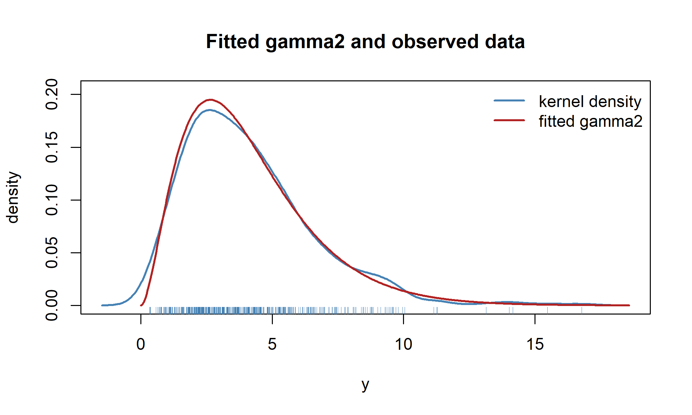
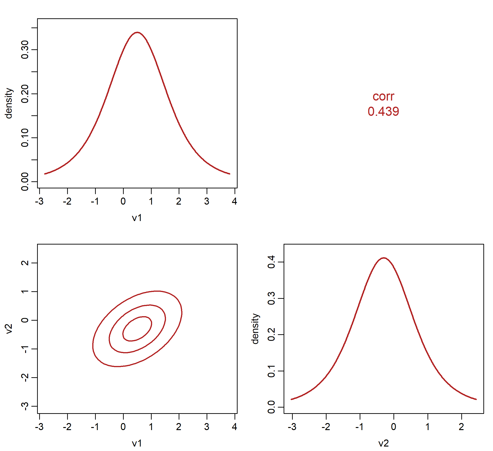

d <- gamma2_distrib()
d@params
#> [1] "mu" "sigma2"
d@params_bounds
#> $mu
#> [1] 0 Inf
#>
#> $sigma2
#> [1] 0 Inf
d@link_params$sigma2
#> S7 Link Object: log
#> - Parameter domain (theta): (0, Inf)3 The distributions7 package
Chapter 2 dealt with the transformation of a single number; this chapter deals with the object that transformation serves, a parametric family of probability distributions carrying its density together with everything a modeling routine needs to know about it.
The chapter divides into five parts, which can be read in order or separately. Section 3.1 sets out what a distrib object provides and develops the likelihood theory the package rests on: score, observed and expected information, and the Bartlett identities in full generality. The same section transports derivatives onto the unconstrained scale by Faà di Bruno’s formula, and covers derivatives with respect to the response and derivatives of the distribution function, which censored likelihoods require. It then presents the families, one name per parametrization where a family has several.
Section 3.2 treats operators on distributions: a change of variables, zero-inflation, zero-adjustment and truncation, each of which takes a distribution and returns another with the same machinery intact. The derivatives of the constructed model must be assembled from those of its parent, and doing so at fourth order in full generality requires some combinatorics of set partitions.
Section 3.3 applies the apparatus to the simplest problem that exercises all of it, maximum likelihood for an i.i.d. sample. Section 3.4 describes what a distribution receives when it implements nothing but its density, which is the part of the package that makes user-defined families practical.
Section 3.5 treats families whose observations are vectors. The likelihood theory is unchanged, and the section shows how the matrix parameter such a family carries is reduced to a list of scalars, so that everything the previous four sections describe applies to it without alteration. Section 3.6 closes the chapter with the package in use: the census of the families, the wrappers, and a censored fit assembled from the cdf derivatives.
3.1 Distributions
This chapter develops the likelihood theory that the toolkit implements and then presents the univariate families that distributions7 ships. The theory comes first because it is shared: the score, the two informations, the Bartlett identities and the change of scale are defined once, at the level of the base class, and every distribution, including a user-defined one, inherits them. The catalog follows, with particular attention to the places where the parametrization chosen here differs from the one used by base R, because those are the places where misreadings arise.
3.1.1 The distrib class
A distribution is an S7 object. It carries its name, its dimensionality, the bounds of its support, the names and interpretations of its parameters, their individual domains, and the link function attached to each parameter. It also carries a per-parameter flag recording whether the log-likelihood is differentiable in that parameter, whose use is described in Section 3.1.24. Two subclasses, continuous_distrib and discrete_distrib, provide the defaults appropriate to each kind.
Parameters travel through the API as a named list called theta, and every generic normalizes this list before doing anything else. The normalization does three things. It reorders the entries by name, so that list(sigma2 = 2, mu = 3) and list(mu = 3, sigma2 = 2) mean the same thing. It strips names from the values, because a parameter that has passed through a link function comes back carrying its own name, which would otherwise leak into the results and label a density "sigma2". And it validates every value against the parameter’s domain.
The domains are treated as open intervals. A Gaussian requires \(\sigma > 0\), not \(\sigma \geq 0\), and a Bernoulli requires \(0 < \mu < 1\). At the closed boundary the log-likelihood and its derivatives do not exist, and accepting a boundary value would replace an informative error now with an unexplained NaN several calls later.
distrib_pdf(gaussian1_distrib(), 1, list(mu = 0, sigma = 0))
#> Error:
#> ! Invalid parameter value(s) for the 'gaussian1' distribution:
#> 'sigma' = 0 is outside its domain (0, Inf)The generics fall into four groups:
| Group | Generics |
|---|---|
| Probability | distrib_pdf, distrib_cdf, distrib_quantile, distrib_rng, distrib_atoms |
| Parameter derivatives | distrib_gradient, distrib_hessian, distrib_expected_hessian, distrib_deriv3, distrib_deriv4 |
| Response derivatives | distrib_grad_y, distrib_hess_y |
| Moments | expectation, mean, variance, std_dev, skewness, kurtosis, moment |
Of all of these, only distrib_pdf has no default; everything else can be derived from the density alone, as the Rayleigh example of Section 1.4 showed.
3.1.2 Score and information
Fix a distribution with density or mass function \(f(y;\theta)\), where \(\theta = (\theta_1, \dots, \theta_p)^\top\), and write \(\ell(\theta; y) = \log f(y;\theta)\) for the log-likelihood of a single observation. Derivatives with respect to the parameters are written with parenthesized superscripts,
\[ \ell^{(i)} = \frac{\partial \ell}{\partial \theta_i}, \qquad \ell^{(ij)} = \frac{\partial^{2} \ell}{\partial \theta_i \partial \theta_j}, \qquad \ell^{(ijk)} = \frac{\partial^{3} \ell}{\partial \theta_i \partial \theta_j \partial \theta_k}, \]
and so on. This notation keeps the subscript position free for its usual meanings in likelihood work: \(\ell_i\) for the contribution of the \(i\)-th observation, or \(\ell_Y\) for the log-likelihood of a transformed model in the next section. The parenthesized superscript unambiguously marks a derivative, as \(f^{(k)}\) does for a function of one variable. The two usages agree: when \(\ell\) depends on a single parameter \(\theta\), the \(k\)-th derivative can be written either as \(\ell^{(k)}\) with an integer order or as \(\ell^{(\theta\cdots\theta)}\) with the label repeated, and both forms appear below, each where it is clearer.
The vector \((\ell^{(1)}, \dots, \ell^{(p)})^\top\) is the score; the matrix \(-[\ell^{(ij)}]\) is the observed information; and the expected information, or Fisher information, is \(\mathcal{I}(\theta) = -\mathbb{E}[\ell^{(ij)}]\), the expectation being taken over \(Y \sim f(\cdot\,;\theta)\) at the same parameter value. The classical account of these quantities and of the asymptotics that rest on them is Cox and Hinkley (1974), with Severini (2000) and Pace and Salvan (1997) as fuller modern treatments.
Both sign conventions circulate in the literature, and a sign error is invisible inside a symmetric matrix, so the convention used here needs to be stated explicitly. The package returns derivatives, not informations: distrib_hessian() gives \([\ell^{(ij)}]\), and distrib_expected_hessian() gives \(\mathbb{E}[\ell^{(ij)}]\), each with the sign of the derivative, so the informations are the negatives of what the functions return.
Since mixed partial derivatives are symmetric, only one representative of each multi-index is stored, and components are returned as named lists keyed in a canonical order — "mu_sigma2" stands for \(\ell^{(\mu\sigma^2)} = \ell^{(\sigma^2\mu)}\):
d <- gamma2_distrib()
th <- list(mu = 3, sigma2 = 2)
y <- c(1, 2.5, 7)
str(distrib_gradient(d, y, th))
#> List of 2
#> $ mu : num [1:3] -1.9502 0.0487 0.8875
#> $ sigma2: num [1:3] 0.713 -0.224 0.834
str(distrib_hessian(d, y, th))
#> List of 3
#> $ mu_mu : num [1:3] -1.722 -0.806 0.224
#> $ sigma2_sigma2: num [1:3] -0.8468 0.0898 -0.9685
#> $ mu_sigma2 : num [1:3] 1.154 0.155 -0.265Everything in this section and the next two assumes the model is regular at \(\theta\): the support of \(f\) does not depend on \(\theta\), the log-likelihood is four times differentiable, and derivatives may be exchanged with the integral sign at the orders involved. Every family in the catalog satisfies these conditions everywhere except the Laplace, whose location parameter sits at a kink of the log-likelihood, and Section 3.1.24 is devoted to what happens then.
3.1.3 The Bartlett identities
The information matrix equality \(\mathbb{E}[\ell^{(ij)}] = -\mathbb{E}[\ell^{(i)} \ell^{(j)}]\) is the second member of an infinite family of identities, one for each order of differentiation, due to Bartlett (1953a) and Bartlett (1953b) and treated systematically in McCullagh (1987). Taken together, the family allows an expected derivative of any order to be computed from expectations of products of lower-order ones. distributions7 implements the family in full generality, so this section derives it.
The starting point is the fact that a density integrates to one for every value of the parameter,
\[\int f(y;\theta)\, dy = 1 \qquad \text{for all } \theta \in \Theta.\]
The right-hand side is constant in \(\theta\), so every derivative of the left-hand side must vanish, and regularity lets us take those derivatives under the integral sign:
\[\int \frac{\partial^{k} f}{\partial\theta_{i_1}\cdots\partial\theta_{i_k}}\,dy = 0. \tag{3.1}\]
Everything now depends on expressing the derivatives of \(f\) through the derivatives of \(\ell = \log f\), and the expression has a precise combinatorial structure.
Lemma 3.1 (Derivatives of \(e^{\ell}\)) For every \(k \geq 1\),
\[ \frac{\partial^{k} e^{\ell}}{\partial\theta_{i_1}\cdots\partial\theta_{i_k}} = e^{\ell} \sum_{\pi \in \Pi_k} \prod_{B \in \pi} \ell^{(B)} , \]
where \(\Pi_k\) is the set of all partitions of the index set \(\{i_1, \dots, i_k\}\) into non-empty blocks, and \(\ell^{(B)}\) is the derivative of \(\ell\) with respect to the parameters indexed by the block \(B\).
The formula is the Faà di Bruno expansion of the exponential, and the reason the partitions appear is visible in a single differentiation. Differentiate the expression at order \(k\) with respect to a new index. The derivative falls either on the leading factor \(e^{\ell}\), which contributes a new block containing that index alone, or on one of the factors \(\ell^{(B)}\), which enlarges the block \(B\). These are exactly the two ways of extending a partition of a \(k\)-element set to a partition of a \((k{+}1)\)-element one, and each new partition arises exactly once. The combinatorial identity behind this is the recursion for the complete Bell polynomials, treated in Comtet (1974) and Stanley (2012).
Substituting the lemma into Equation 3.1, and noticing that \(e^{\ell} = f\) is exactly the density needed to turn the integral into an expectation, we arrive at the result.
Theorem 3.1 (Bartlett identities) Under the regularity conditions above, for every \(k \geq 1\) and every choice of indices,
\[\sum_{\pi \,\in\, \Pi_k} \mathbb{E}\!\left[\;\prod_{B \in \pi} \ell^{(B)} \right] = 0.\]
To use the identity, single out the partition consisting of one big block: its contribution is \(\mathbb{E}[\ell^{(i_1 \cdots i_k)}]\), the expected derivative of top order, and moving everything else to the other side,
\[ \mathbb{E}\!\left[\ell^{(i_1\cdots i_k)}\right] = -\sum_{\substack{\pi \in \Pi_k \\ |\pi| > 1}} \mathbb{E}\!\left[\prod_{B\in\pi}\ell^{(B)}\right]. \tag{3.2}\]
The first three cases, written out, are:
\[ \begin{aligned} k = 1: \quad & \mathbb{E}[\ell^{(i)}] = 0, \\[4pt] k = 2: \quad & \mathbb{E}[\ell^{(ij)}] = -\mathbb{E}[\ell^{(i)}\ell^{(j)}], \\[4pt] k = 3: \quad & \mathbb{E}[\ell^{(ijk)}] = -\Big(\mathbb{E}[\ell^{(ij)}\ell^{(k)}] + \mathbb{E}[\ell^{(ik)}\ell^{(j)}] + \mathbb{E}[\ell^{(jk)}\ell^{(i)}] + \mathbb{E}[\ell^{(i)}\ell^{(j)}\ell^{(k)}]\Big). \end{aligned} \]
The case \(k = 1\) is the zero-mean property of the score. The case \(k = 2\) is the information matrix equality, and read from right to left it shows that the outer-product-of-gradients estimator of the information is the second Bartlett identity itself. The implementation follows the mathematics directly: it enumerates the set partitions of the index set and sums products of quantities the distribution already provides. The number of terms is the Bell number \(B_k\) — one, two, five and fifteen for \(k = 1, \dots, 4\) — so the computation stays small at every order the toolkit supports.
Approximating expected derivatives
When a distribution has no closed-form expected derivative, the expectation has to be approximated, and the derivative generics accept an approx argument choosing among three strategies. The strategy "bartlett" (also spelled "opg") applies Equation 3.2; at second order it needs nothing but the score, which makes it the cheapest option, and it is the default there. The strategy "integrate" computes \(\mathbb{E}[\partial^k \ell]\) literally, by quadrature for continuous distributions and by summation for discrete ones; when the observed derivative is available in closed form this is usually the most accurate route, and it is the default at orders three and four. The strategy "mc" simulates from the distribution and averages the observed derivative over the draws; it is robust when quadrature struggles, at the price of Monte Carlo noise.
The first strategy differs from the other two in more than cost. "integrate" and "mc" estimate the expected derivative itself, whereas "bartlett" estimates the quantity that the identity says the expected derivative equals under regularity. When regularity fails the two quantities differ, and the quantity that retains the meaning of an information is the Bartlett one; Section 3.1.24 shows this on a concrete example.
The quadrature behind "integrate" splits its integral at three quantiles of the distribution. The choice of three knots rather than more, and the failure mode a finer subdivision introduces at extreme parameter values, are described in Section 3.4.5.
3.1.4 Derivatives on the link scale
The parameters of a distribution are constrained, and the linear predictors of a model are not, so every derivative generic accepts an argument scale = c("parameter", "link"). With scale = "link" the derivatives are taken with respect to
\[\eta_i = g_i(\theta_i), \qquad \theta_i = h_i(\eta_i), \qquad h_i = g_i^{-1},\]
where \(g_i\) is the link that the distribution carries for its \(i\)-th parameter. The essential structural fact is that each parameter has its own link and the map is applied coordinate by coordinate, so the Jacobian of \(\theta\) with respect to \(\eta\) is diagonal. The diagonality makes the general multivariate chain rule collapse into a product of univariate ones, and the derivation below proceeds in stages, starting with a single parameter.
One parameter
Repeated differentiation of the composition \(\ell(h(\eta))\) is governed by Faà di Bruno’s formula, which organizes the higher-order chain rule through the partial Bell polynomials \(B_{m,j}\).
Theorem 3.2 (Faà di Bruno) If \(\ell\) is \(m\) times differentiable in \(\theta\) and \(h\) is \(m\) times differentiable in \(\eta\), with \(\theta = h(\eta)\), then
\[ \frac{\partial^{m}}{\partial\eta^{m}}\,\ell(h(\eta)) = \sum_{j=1}^{m} \ell^{(j)}(\theta)\; B_{m,j}\!\left(h', h'', \dots, h^{(m-j+1)}\right). \]
For the orders the toolkit uses, the Bell polynomials are small enough to list in full,
\[ \begin{array}{llll} B_{1,1} = h' \\ B_{2,1} = h'' & B_{2,2} = (h')^{2} \\ B_{3,1} = h''' & B_{3,2} = 3h'h'' & B_{3,3} = (h')^{3} \\ B_{4,1} = h'''' & B_{4,2} = 4h'h''' + 3(h'')^{2} & B_{4,3} = 6(h')^{2}h'' & B_{4,4} = (h')^{4} \end{array} \]
and substituting them into the theorem gives the four formulas that the package applies:
\[ \begin{aligned} \frac{\partial \ell}{\partial \eta} &= \ell^{(\theta)}\,h', \\[4pt] \frac{\partial^{2} \ell}{\partial \eta^{2}} &= \ell^{(\theta\theta)}\,(h')^{2} + \ell^{(\theta)}\,h'', \\[4pt] \frac{\partial^{3} \ell}{\partial \eta^{3}} &= \ell^{(\theta\theta\theta)}\,(h')^{3} + 3\,\ell^{(\theta\theta)}\,h'h'' + \ell^{(\theta)}\,h''', \\[4pt] \frac{\partial^{4} \ell}{\partial \eta^{4}} &= \ell^{(\theta\theta\theta\theta)}\,(h')^{4} + 6\,\ell^{(\theta\theta\theta)}\,(h')^{2}h'' + \ell^{(\theta\theta)}\left(4h'h''' + 3(h'')^{2}\right) + \ell^{(\theta)}\,h''''. \end{aligned} \]
The first two lines can be checked by hand: the first is the chain rule, and the second follows from differentiating it as a product. All four show the property that makes the construction generic: each link-scale derivative is a linear combination of the parameter-scale derivatives of order up to \(m\), with coefficients that depend only on the link. The transformation never needs to know which distribution it is transforming, so it can be written once, in the body of the generic, for all distributions at once.
Several parameters
With several parameters, a mixed derivative such as \(\partial^4 \ell / \partial\eta_a^2\,\partial\eta_b^2\) must be handled, and here the diagonality of the Jacobian becomes essential.
Proposition 3.1 (Faà di Bruno with a diagonal Jacobian) Let the multi-index involve the distinct parameters \(p_1, \dots, p_r\) with multiplicities \(m_1, \dots, m_r\), and let \(k = \sum_t m_t\). Then
\[ \frac{\partial^{k} \ell}{\partial \eta_{p_1}^{m_1} \cdots \partial \eta_{p_r}^{m_r}} = \sum_{j_1=1}^{m_1} \cdots \sum_{j_r=1}^{m_r} \ell^{(p_1^{j_1} \cdots p_r^{j_r})} \prod_{t=1}^{r} B_{m_t, j_t}\!\left(h_{p_t}', h_{p_t}'', \dots\right), \]
where \(\ell^{(p_1^{j_1}\cdots p_r^{j_r})}\) denotes the parameter-scale derivative taken \(j_t\) times with respect to \(\theta_{p_t}\).
The diagonality of the Jacobian is what makes this factorization possible. Each \(\theta_{p_t}\) depends on its own linear predictor and on nothing else, so the operator \(\partial^{m_t}/\partial\eta_{p_t}^{m_t}\) sees \(\ell\) as a function of the single variable \(\theta_{p_t}\), and Theorem 3.2 applies in that variable alone. The Bell polynomial it produces involves only derivatives of \(h_{p_t}\), so it is constant under differentiation with respect to any other predictor, and the operators can be applied one after another in any order. Each round multiplies in its own factor and deepens the sum by one index. Without diagonality the general multivariate version of the formula would be needed instead, and it is considerably heavier; Constantine and Savits (1996) gives it.
Two special cases cover most of what happens in practice. A purely mixed second derivative across two different parameters involves \(m_1 = m_2 = 1\), each inner sum has a single term, and the formula collapses to a rescaling,
\[ \frac{\partial^{2}\ell}{\partial\eta_a \partial\eta_b} = \ell^{(ab)}\,h_a'\,h_b' \qquad (a \neq b). \]
And the number of terms in the general sum is \(\prod_t m_t\) — at most eight for the orders the toolkit supports — so the computation remains trivial even at fourth order.
The expected Hessian on the link scale
For expected second derivatives the first-order term drops out on its own.
Corollary 3.1 (Congruence) \[\mathbb{E}\!\left[\frac{\partial^{2}\ell}{\partial\eta_a\partial\eta_b}\right] = h_a'\,h_b'\;\mathbb{E}\!\left[\ell^{(ab)}\right],\]
or in matrix form \(\mathbb{E}[H_\eta] = \operatorname{diag}(h')\,\mathbb{E}[H_\theta]\,\operatorname{diag}(h')\).
The first-order term is what disappears. For \(a = b\) the univariate formula gives \(\partial^2\ell/\partial\eta_a^2 = \ell^{(aa)}(h_a')^2 + \ell^{(a)} h_a''\), and taking expectations kills the second piece because the first Bartlett identity says the score has mean zero; for \(a \neq b\) there was never a first-order term to begin with.
The corollary has a practical consequence. A congruence transform of a positive semi-definite matrix is positive semi-definite, so the link-scale Fisher information inherits the definiteness of the parameter-scale one automatically. Had one instead transformed the observed Hessian and then averaged numerically, the \(\ell^{(a)} h_a''\) term would have survived and that guarantee would have been lost.
Implementation
The change of scale is implemented once, in the body of each derivative generic, between the dispatch and the return: a method always computes parameter-scale values, and the generic transforms them if scale = "link" was requested.
distrib_gradient <- S7::new_generic(
"distrib_gradient", "distrib",
function(distrib, y, theta, scale = c("parameter", "link"), ...) {
...
res <- S7::S7_dispatch() # parameter scale, always
if (scale == "link") to_link_scale(...) else res
})This placement has one visible consequence for users who write their own derivative methods. S7 requires a method’s formal arguments to include the generic’s named arguments, so such a method must declare scale = c("parameter", "link"), ... in its signature even though it never touches scale itself. Omitting the declaration makes dispatch fail.
3.1.5 Derivatives with respect to the response
Besides derivatives in the parameters, continuous distributions provide \(\partial\ell/\partial y\) and \(\partial^{2}\ell/\partial y^{2}\) through distrib_grad_y() and distrib_hess_y(); for a discrete variable there is nothing to differentiate, so discrete distributions have no such methods. These quantities feed quantile residuals and smoothness criteria further up the toolkit. The default implementation is a central finite difference of the log-density with a step that shrinks near the boundary of the support, so that \(y \pm \delta\) never leaves it.
d <- gamma2_distrib()
th <- list(mu = 3, sigma2 = 2)
distrib_grad_y(d, c(1, 3, 6), th)
#> [1] 2.0000000 -0.3333333 -0.9166667
# closed form: with shape a = mu^2/sigma2 and rate b = mu/sigma2,
# dl/dy = (a - 1)/y - b
(3^2 / 2 - 1) / c(1, 3, 6) - 3 / 2
#> [1] 2.0000000 -0.3333333 -0.91666673.1.6 Derivatives of the distribution function
Everything so far has differentiated the density. There is a second family of derivatives that a modeling framework needs and that is almost never provided: those of the distribution function with respect to the parameters. The reason they matter is censoring. An observation known only to be at most \(q\) contributes \(\log F(q;\theta)\) to the log-likelihood rather than \(\log f(y;\theta)\); one known only to exceed \(q\) contributes \(\log\big(1 - F(q;\theta)\big)\); and an interval-censored one contributes \(\log\big(F(b;\theta) - F(a;\theta)\big)\). Without \(\partial F/\partial\theta\) none of these can be fitted by any method that uses a score, which rules out survival models, tobit models and every problem with a detection limit; the likelihoods themselves are standard, and Klein and Moeschberger (2003) sets them out in full.
The mathematics is a single exchange of derivative and integral. The region of integration is \((-\infty, q]\), which is fixed and does not depend on \(\theta\) — the same condition that makes truncation a regular problem in Theorem 3.5 — so
\[ \frac{\partial F(q;\theta)}{\partial\theta_i} = \int_{-\infty}^{q}\frac{\partial f}{\partial\theta_i}\,\mathrm{d}y = \int_{-\infty}^{q} f\,\ell^{(i)}\,\mathrm{d}y = F(q)\;\mathbb{E}\!\left[\ell^{(i)} \,\middle|\, Y \leq q\right], \]
using \(\partial_i f = f\,\ell^{(i)}\) in the middle step and dividing by \(F(q)\) in the last to recognize the conditional density. So the gradient of the log distribution function is a partial mean of the score: \(\partial_i \log F(q) = \mathbb{E}[\ell^{(i)} \mid Y \le q]\).
The second order follows the same way, with Lemma 3.2 supplying the integrand:
\[ \frac{\partial^{2} F(q)}{\partial\theta_i\partial\theta_j} = F(q)\;\mathbb{E}\!\left[\ell^{(ij)} + \ell^{(i)}\ell^{(j)} \,\middle|\, Y \leq q\right], \]
and the log scale from \(\partial_{ij}\log P = \partial_{ij}P/P - (\partial_iP/P)(\partial_jP/P)\).
The implementation treats the two kinds of distribution differently. For a discrete distribution the expectation is a finite sum over the support up to \(q\), so the identity is not an approximation at all and can be evaluated as it stands. For a continuous one it is an integral over a semi-infinite region, and evaluating it by quadrature is both slower and less accurate than differencing the distribution function, which for every family in the catalog is an analytic expression. The package uses the exact sum for discrete families and the difference for continuous ones.
Some families need neither. For a location-scale family, \(F(y) = G(z)\) with \(z = (y-\mu)/\sigma\), and differentiating the composition gives the whole set in terms of quantities the distribution already provides:
\[ \frac{\partial F}{\partial\mu} = -f(y), \qquad \frac{\partial F}{\partial\sigma} = -z\,f(y), \qquad \frac{\partial^{2} F}{\partial\mu^{2}} = f(y)\,\frac{\partial \ell}{\partial y}, \]
and similarly for the remaining second derivatives. The first of these has a direct interpretation: the sensitivity of the distribution function to a shift in location is minus the density at that point, because shifting the distribution to the right by \(\mathrm{d}\mu\) removes exactly \(f(q)\,\mathrm{d}\mu\) of mass from below \(q\).
d <- gaussian1_distrib()
th <- list(mu = 1.2, sigma = 1.7)
q <- c(0, 1.2, 3)
distrib_grad_cdf(d, q, th, log = FALSE)$mu
#> [1] -0.1829209 -0.2346719 -0.1339725
-dnorm(q, 1.2, 1.7)
#> [1] -0.1829209 -0.2346719 -0.1339725Putting it to work on a censored sample takes one line per kind of observation:
set.seed(1)
y <- distrib_rng(d, 200, list(mu = 1, sigma = 2))
cens <- y > 2.5 # everything above 2.5 is only known to be above it
y[cens] <- 2.5
# the score in mu: ordinary observations contribute the usual score, censored
# ones the derivative of log(1 - F)
sum(distrib_gradient(d, y[!cens], th)$mu) +
sum(distrib_grad_cdf(d, y[cens], th, lower.tail = FALSE, log = TRUE)$mu)
#> [1] -12.02472An interval-censored observation is assembled from the unlogged derivatives at the two endpoints, \(\partial\log(F(b)-F(a)) = (\partial F(b) - \partial F(a))/(F(b)-F(a))\), which is why the generic offers log = FALSE as well.
3.1.7 One name per parametrization
Several families are useful in more than one parametrization. A Gaussian may carry its scale, its variance or its precision as the second parameter; a negative binomial may have its variance quadratic in the mean or linear in it; a von Mises may carry its concentration or its mean resultant length. In a modeling framework the parametrization decides what a linear predictor acts on, so each of these is a genuinely different model, and the package gives each one a name of its own: a numeral appended to the family, as in gaussian1 for the scale form, gaussian2 for the variance and gaussian3 for the precision. Where the literature already numbers the forms the numbering follows it – negbin1 and negbin2 are the NB1 and NB2 of Cameron and Trivedi (1986), and weibull1/weibull3 follow the WEI/WEI3 naming of Rigby and Stasinopoulos (2005), which is why there is no weibull2. Each numbered family is a family in its own right, with exact derivatives on its own scale.
| family | parametrizations |
|---|---|
| beta | beta1, beta2 |
| betabinom | betabinom1, betabinom2 |
| gamma | gamma1, gamma2 |
| gaussian | gaussian1, gaussian2, gaussian3 |
| gengamma | gengamma1, gengamma2 |
| invgauss | invgauss1, invgauss2 |
| lognormal | lognormal1, lognormal2 |
| negbin | negbin1, negbin2 |
| pig | pig1, pig2 |
| skewnormal | skewnormal1, skewnormal2 |
| student_t | student_t1, student_t2 |
| vonmises | vonmises1, vonmises2 |
| weibull | weibull1, weibull3 |
Most of these are produced mechanically by the reparametrize() wrapper of Section 3.2.7, validated against a hand-written twin where one exists. Two are written by hand for reasons the general mechanism cannot deliver: the centered skew normal, whose value lies in a cancellation that a generic chain rule would compute as a difference of large numbers, and the von Mises in its mean resultant length, whose map has no elementary inverse and is differentiated by the inverse function rule of Section 8.3.
3.1.8 Moments in closed form
mean(), variance(), skewness() and kurtosis() are implemented analytically for every family whose moment has a closed form, and fall back on the numerical expectation otherwise; a moment that does not exist, like a Student t’s kurtosis below five degrees of freedom, is reported as NaN rather than as the artifact of a divergent quadrature. The numerical route itself is the batched quadrature of Section 8.2: a vector of parameter values costs one adaptive pass, not one per value.
3.1.9 The catalog
The tables below are generated from the distribution objects themselves.
| constructor | kind | parameters |
|---|---|---|
gaussian1_distrib() |
continuous | mu, sigma |
gaussian2_distrib() |
continuous | mu, sigma2 |
gaussian3_distrib() |
continuous | mu, tau |
cauchy_distrib() |
continuous | mu, sigma |
logistic_distrib() |
continuous | mu, sigma |
student_t1_distrib() |
continuous | mu, sigma, nu |
student_t2_distrib() |
continuous | mu, sigma, nu |
laplace_distrib() |
continuous | mu, b |
pseudohuber_distrib() |
continuous | mu, sigma, nu |
skewnormal1_distrib() |
continuous | mu, sigma, alpha |
skewnormal2_distrib() |
continuous | mu, sigma, gamma1 |
skewt_distrib() |
continuous | mu, sigma, alpha, nu |
gumbel_distrib() |
continuous | mu, sigma |
gamma1_distrib() |
continuous | mu, phi |
gamma2_distrib() |
continuous | mu, sigma2 |
invgauss1_distrib() |
continuous | mu, phi |
invgauss2_distrib() |
continuous | mu, lambda |
lognormal1_distrib() |
continuous | mu, sigma2 |
lognormal2_distrib() |
continuous | mean, var |
weibull1_distrib() |
continuous | mu, sigma |
weibull3_distrib() |
continuous | mean, sigma |
exponential_distrib() |
continuous | mu |
chisq_distrib() |
continuous | mu |
beta1_distrib() |
continuous | mu, phi |
beta2_distrib() |
continuous | alpha, beta |
bernoulli_distrib() |
discrete | mu |
binomial_distrib() |
discrete | mu |
poisson_distrib() |
discrete | mu |
negbin1_distrib() |
discrete | mu, theta |
negbin2_distrib() |
discrete | mu, theta |
geometric_distrib() |
discrete | mu |
betabinom1_distrib() |
discrete | mu, sigma |
betabinom2_distrib() |
discrete | alpha, beta |
gpd_distrib() |
continuous | sigma, xi |
pig1_distrib() |
discrete | mu, sigma |
pig2_distrib() |
discrete | mu, alpha |
vonmises1_distrib() |
continuous | mu, kappa |
vonmises2_distrib() |
continuous | mu, rho |
gengamma1_distrib() |
continuous | a, d, p |
gengamma2_distrib() |
continuous | mean, d, p |
Detailed entries follow for the core families, whose formulas the rest of the chapter draws on; the remaining families state their densities and maps on their own reference pages.
| distribution | kind | support | parameters | links |
|---|---|---|---|---|
| Gaussian | continuous | \((-\infty, \infty)\) | mu, sigma |
identity, log |
| Cauchy | continuous | \((-\infty, \infty)\) | mu, sigma |
identity, log |
| Logistic | continuous | \((-\infty, \infty)\) | mu, sigma |
identity, log |
| Student t | continuous | \((-\infty, \infty)\) | mu, sigma, nu |
identity, log, log |
| Laplace | continuous | \((-\infty, \infty)\) | mu, b |
identity, log |
| Pseudo-Huber | continuous | \((-\infty, \infty)\) | mu, sigma, nu |
identity, log, log |
| Gamma | continuous | \((0, \infty)\) | mu, sigma2 |
log, log |
| Inverse Gaussian | continuous | \((0, \infty)\) | mu, phi |
log, log |
| Lognormal | continuous | \((0, \infty)\) | mu, sigma2 |
identity, log |
| Beta | continuous | \((0, 1)\) | mu, phi |
logit, log |
| Bernoulli | discrete | \(\{0, \dots, 1\}\) | mu |
logit |
| Binomial | discrete | \(\{0, \dots, 10\}\) | mu |
logit |
| Poisson | discrete | \(\{0, 1, \dots\}\) | mu |
log |
| Negative binomial (NB2) | discrete | \(\{0, 1, \dots\}\) | mu, theta |
log, log |
A reader who wants any of these families in more depth than a catalog entry can give will find them in Johnson, Kotz, and Balakrishnan (1994), Johnson, Kotz, and Balakrishnan (1995) and Johnson, Kemp, and Kotz (2005). Several of the parametrizations differ from the ones used by the corresponding d* function in base R: the Gamma is parametrized by mean and variance rather than shape and rate, the Beta by mean and precision, the negative binomial in its NB2 form. In each such case the entry states the map between the two explicitly. Every univariate family implements its observed derivatives to fourth order in closed form – the core families as compiled Rcpp kernels, the newer ones in vectorized R where a port was measured to buy nothing – except the skew t’s degrees-of-freedom components, which have no elementary form and come from one verified stencil. The continuous-integration matrix builds the compiled kernels with several compilers on several platforms.
3.1.10 Gaussian
gaussian1_distrib()Support: \(y \in \mathbb{R}\).
\[f(y) = \frac{1}{\sigma\sqrt{2\pi}}\exp\!\left\{-\frac{(y-\mu)^{2}}{2\sigma^{2}}\right\}\]
\[\mathbb{E}[Y] = \mu, \qquad \operatorname{Var}(Y) = \sigma^{2}\]
The reference case: \(\sigma\) is the standard deviation, as in dnorm(y, mu, sigma).
3.1.11 Cauchy
cauchy_distrib()Support: \(y \in \mathbb{R}\).
\[f(y) = \frac{1}{\pi\sigma\left[1 + \left(\frac{y-\mu}{\sigma}\right)^{2}\right]}\]
\[no moments exist\]
Neither the mean nor the variance exists, which is why check_distrib() validates the generator against the cdf rather than against the first two moments: a moment-based check would have nothing to compare here, and the cdf is both always available and the stronger claim.
3.1.12 Logistic
logistic_distrib()Support: \(y \in \mathbb{R}\).
\[f(y) = \frac{e^{-z}}{\sigma\left(1+e^{-z}\right)^{2}}, \qquad z = \frac{y-\mu}{\sigma}\]
\[\mathbb{E}[Y] = \mu, \qquad \operatorname{Var}(Y) = \pi^{2}\sigma^{2}/3\]
Writing \(t = \sigma(z) = (1+e^{-z})^{-1}\) and \(u = 1-t\), the log-density is \(-\log\sigma + \log t + \log u\) and every observed derivative is a polynomial in \(t\): with \(g_1 = 1-2t\), \(g_2 = -2tu\), \(g_3 = g_2 g_1\), \(g_4 = g_2(1-6tu)\), the recursions \(\partial_\mu[A/\sigma^{k}] = -A'/\sigma^{k+1}\) and \(\partial_\sigma[A/\sigma^{k}] = -(zA' + kA)/\sigma^{k+1}\) generate all of them, overflow-free out to \(|z| = 4000\). The expected derivatives were rederived here because symbolic algebra systems return, for this family, expressions containing polylogarithms, the imaginary unit and a dependence on \(\mu\) — which is impossible for a location-scale family and is a useful reminder that a computer-algebra answer is not automatically a correct one. Seven of the nine expected third-order components are known exactly (\(\mathbb{E}[\ell_{\mu\mu\sigma}] = 1/(2\sigma^{3})\), \(\mathbb{E}[\ell_{\sigma\sigma\sigma}] = (\pi^{2}+2)/(2\sigma^{3})\), \(\mathbb{E}[\ell_{\mu^{4}}] = 1/(15\sigma^{4})\), the rest zero by symmetry); the two that remain require \(\int w^{k}\operatorname{sech}^{4}w\tanh^{2}w\,dw\) for \(k = 2, 4\) and are open. In the meantime approx = "integrate" supplies them to within Monte Carlo noise.
3.1.13 Student t
student_t1_distrib()Support: \(y \in \mathbb{R}\).
\[f(y) = \frac{\Gamma\!\left(\frac{\nu+1}{2}\right)}{\sigma\sqrt{\nu\pi}\,\Gamma\!\left(\frac{\nu}{2}\right)}\left(1+\frac{z^{2}}{\nu}\right)^{-\frac{\nu+1}{2}}, \qquad z = \frac{y-\mu}{\sigma}\]
\[\mathbb{E}[Y] = \mu\ (\nu>1), \qquad \operatorname{Var}(Y) = \sigma^{2}\nu/(\nu-2)\ (\nu>2)\]
A location-scale family built on the standard \(t\): \(\sigma\) is a scale, not the standard deviation, which is \(\sigma\sqrt{\nu/(\nu-2)}\) and exists only for \(\nu > 2\). The degrees of freedom \(\nu\) are continuous and estimable.
3.1.14 Laplace
laplace_distrib()Support: \(y \in \mathbb{R}\).
\[f(y) = \frac{1}{2b}\exp\!\left\{-\frac{|y-\mu|}{b}\right\}\]
\[\mathbb{E}[Y] = \mu, \qquad \operatorname{Var}(Y) = 2b^{2}\]
The one non-regular member of the catalog: \(\ell\) has a kink at \(y = \mu\), the observed information in \(\mu\) is identically zero, and the Fisher information \(1/b^{2}\) can only be recovered from the score. See Section 3.1.24. params_smooth records this, and it is the reason that property exists at all.
3.1.15 Pseudo-Huber
pseudohuber_distrib()Support: \(y \in \mathbb{R}\).
\[f(y) = \frac{\exp(-D)}{2\sigma\sqrt{\nu}\,K_{1}(\sqrt{\nu})}, \qquad D = \sqrt{\nu + \left(\frac{y-\mu}{\sigma}\right)^{2}}\]
\[\mathbb{E}[Y] = \mu; variance has no elementary closed form\]
The normalizing constant is exact, not approximate: \(\int_{-\infty}^{\infty} e^{-\sqrt{a^{2}+z^{2}}}\,dz = 2aK_{1}(a)\), so with \(a = \sqrt{\nu}\) and \(dy = \sigma\,dz\) the constant is \(2\sigma\sqrt{\nu}K_{1}(\sqrt{\nu})\). The Bessel terms are degree-homogeneous, which is why the exponentially scaled besselK(x, nu, expon.scaled = TRUE) may be used: the scaling cancels between numerator and denominator, so it is exact rather than approximate, and it avoids overflow out to \(\nu = 2000\). \(\nu \to \infty\) gives a Gaussian limit and small \(\nu\) a Laplace-like one, so the family interpolates between the two — with, unlike the Laplace, a genuinely smooth log-density everywhere.
3.1.16 Gamma
gamma2_distrib()Support: \(y \in (0, \infty)\).
\[f(y) = \frac{\beta^{\alpha}}{\Gamma(\alpha)}y^{\alpha-1}e^{-\beta y}, \qquad \alpha = \frac{\mu^{2}}{\sigma^{2}}, \quad \beta = \frac{\mu}{\sigma^{2}}\]
\[\mathbb{E}[Y] = \mu, \qquad \operatorname{Var}(Y) = \sigma^{2}\]
Not the base-R parametrization. dgamma() takes a shape and a rate; this object takes the mean and the variance directly, which is what a modeling framework wants, since it is \(\mu\) that gets a linear predictor. The map is \(\alpha = \mu^{2}/\sigma^{2}\), \(\beta = \mu/\sigma^{2}\), whence \(\alpha/\beta = \mu\) and \(\alpha/\beta^{2} = \sigma^{2}\) as claimed.
3.1.17 Inverse Gaussian
invgauss1_distrib()Support: \(y \in (0, \infty)\).
\[f(y) = \frac{1}{\sqrt{2\pi\phi y^{3}}}\exp\!\left\{-\frac{(y-\mu)^{2}}{2\phi\mu^{2}y}\right\}\]
\[\mathbb{E}[Y] = \mu, \qquad \operatorname{Var}(Y) = \phi\mu^{3}\]
In the dispersion parametrization, \(\phi = 1/\lambda\) where \(\lambda\) is the shape used by some references. The variance function \(\phi\mu^{3}\) is what makes the inverse-square link canonical here (see Section 2.5.5).
3.1.18 Lognormal
lognormal1_distrib()Support: \(y \in (0, \infty)\).
\[f(y) = \frac{1}{y\sqrt{2\pi\sigma^{2}}}\exp\!\left\{-\frac{(\log y - \mu)^{2}}{2\sigma^{2}}\right\}\]
\[\mathbb{E}[Y] = e^{\mu + \sigma^{2}/2}, \qquad \operatorname{Var}(Y) = \left(e^{\sigma^{2}}-1\right)e^{2\mu+\sigma^{2}}\]
\(\mu\) and \(\sigma^{2}\) are the mean and variance on the log scale, not of \(Y\) itself: dlnorm() takes sdlog, and this object takes its square. The same law can also be built as transformation(gaussian1_distrib(), exp_transform()), by the change of variables of Section 3.2.1, and the two constructions coincide.
3.1.19 Beta
beta1_distrib()Support: \(y \in (0, 1)\).
\[f(y) = \frac{y^{a-1}(1-y)^{b-1}}{B(a,b)}, \qquad a = \mu\phi, \quad b = (1-\mu)\phi\]
\[\mathbb{E}[Y] = \mu, \qquad \operatorname{Var}(Y) = \dfrac{\mu(1-\mu)}{1+\phi}\]
The mean-precision parametrization of beta regression, not the shape1/shape2 one: \(a = \mu\phi\), \(b = (1-\mu)\phi\), so \(a/(a+b) = \mu\) and \(a+b = \phi\). Larger \(\phi\) means less dispersion.
3.1.20 Bernoulli
bernoulli_distrib()Support: \(y \in \{0, 1\}\).
\[P(Y=y) = \mu^{y}(1-\mu)^{1-y}\]
\[\mathbb{E}[Y] = \mu, \qquad \operatorname{Var}(Y) = \mu(1-\mu)\]
Its support has two points, which is the whole content of Section 3.2.9: a Bernoulli has exactly one free probability, so neither zero-inflating nor zero-adjusting it produces an identified model.
3.1.21 Binomial
binomial_distrib(size = 10)Support: \(y \in \{0, 1, \dots, n\}\).
\[P(Y=y) = \binom{n}{y}\mu^{y}(1-\mu)^{n-y}\]
\[\mathbb{E}[Y] = n\mu, \qquad \operatorname{Var}(Y) = n\mu(1-\mu)\]
The number of trials \(n\) is a property of the object, not a parameter: it is known, not estimated, so it belongs with size rather than in theta. Shown at \(n = 10\).
3.1.22 Poisson
poisson_distrib()Support: \(y \in \{0, 1, 2, \dots\}\).
\[P(Y=y) = \frac{e^{-\mu}\mu^{y}}{y!}\]
\[\mathbb{E}[Y] = \mu, \qquad \operatorname{Var}(Y) = \mu\]
Equidispersed by construction, which is what makes it the natural parent for the zero-inflation and hurdle wrappers of Section 3.2: excess zeros are one of the two standard ways real count data depart from it.
3.1.23 Negative binomial (NB2)
negbin2_distrib()Support: \(y \in \{0, 1, 2, \dots\}\).
\[P(Y=y) = \frac{\Gamma(y+\theta)}{\Gamma(\theta)\,y!}\left(\frac{\theta}{\theta+\mu}\right)^{\theta}\left(\frac{\mu}{\theta+\mu}\right)^{y}\]
\[\mathbb{E}[Y] = \mu, \qquad \operatorname{Var}(Y) = \mu + \dfrac{\mu^{2}}{\theta}\]
The NB2 parametrization: \(\theta\) is the size, and dispersion decreases as \(\theta\) grows, with the Poisson recovered as \(\theta \to \infty\). The excess kurtosis is \(6/\theta + \theta/(\mu(\theta+\mu))\). That expression is worth stating explicitly because the predecessor package this one replaces had \(6/\theta + (\theta+\mu)/(\mu\theta)\), which is wrong; it was found by numerical comparison, not by reading. Every formula inherited from that package was subsequently treated as unverified until checked.
3.1.24 Non-regular models
The Laplace distribution, with density \(f(y) = (2b)^{-1} e^{-|y-\mu|/b}\), is the one non-regular family in the catalog: its log-likelihood has a kink at \(y = \mu\). Families of this kind are treated in Lehmann and Casella (1998), where the information of a non-regular model is defined as the variance of the score rather than as an expected second derivative, which is the definition that survives here. Away from the kink one computes
\[\ell^{(\mu)} = \frac{\operatorname{sign}(y-\mu)}{b}, \qquad \ell^{(\mu\mu)} = 0,\]
so the observed information in \(\mu\) vanishes identically — the log-likelihood is piecewise linear in the location — and yet the Fisher information certainly exists. The second Bartlett identity delivers it directly: since \(\operatorname{sign}(y-\mu)^2 = 1\) almost surely,
\[\mathcal{I}_{\mu\mu} = \mathbb{E}\left[(\ell^{(\mu)})^{2}\right] = \mathbb{E}\left[\frac{\operatorname{sign}(y-\mu)^{2}}{b^{2}}\right] = \frac{1}{b^{2}}.\]
The distribution the package ships is not affected by any of this in daily use. laplace_distrib() implements the expected Hessian in closed form, returning the score-variance value \(-1/b^{2}\) just computed, and, as always when an analytical method exists, the approx argument is simply ignored:
lap <- laplace_distrib()
th <- list(mu = 0, b = 2)
c(bartlett = distrib_expected_hessian(lap, 0, th, approx = "bartlett")$mu_mu,
integrate = distrib_expected_hessian(lap, 0, th, approx = "integrate")$mu_mu,
exact = -1 / th$b^2)
#> bartlett integrate exact
#> -0.25 -0.25 -0.25The three strategies of Section 3.1.3.1 give different answers only on a distribution that carries no closed form for the expectation, which is the situation of a user-defined non-regular family. The following bare Laplace supplies only the density, the score and the observed Hessian:
BareLaplace <- S7::new_class("BareLaplace", parent = continuous_distrib, package = NULL)
S7::method(distrib_pdf, BareLaplace) <- function(distrib, y, theta, log = FALSE) {
ld <- -log(2 * theta[[2]]) - abs(y - theta[[1]]) / theta[[2]]
if (log) ld else exp(ld)
}
S7::method(distrib_gradient, BareLaplace) <- function(distrib, y, theta,
scale = c("parameter", "link"), ...) {
r <- y - theta[[1]]; b <- theta[[2]]
list(mu = sign(r) / b, b = (abs(r) / b - 1) / b)
}
S7::method(distrib_hessian, BareLaplace) <- function(distrib, y, theta,
scale = c("parameter", "link"), ...) {
r <- y - theta[[1]]; b <- theta[[2]]; n <- length(y)
list(mu_mu = rep(0, n), b_b = (b - 2 * abs(r)) / b^3, mu_b = -sign(r) / b^2)
}
bare <- BareLaplace(
distrib_name = "bare laplace", dimension = "univariate", bounds = c(-Inf, Inf),
params = c("mu", "b"), params_interpretation = c(mu = "location", b = "scale"),
n_params = 2, params_bounds = list(mu = c(-Inf, Inf), b = c(0, Inf)),
link_params = list(mu = identity_link(), b = log_link()),
params_smooth = c(mu = FALSE, b = TRUE)
)
set.seed(1)
c(bartlett = distrib_expected_hessian(bare, 0, th, approx = "bartlett")$mu_mu,
integrate = distrib_expected_hessian(bare, 0, th, approx = "integrate")$mu_mu,
mc = distrib_expected_hessian(bare, 0, th, approx = "mc")$mu_mu,
exact = -1 / th$b^2)
#> bartlett integrate mc exact
#> -0.25 0.00 0.00 -0.25On this distribution the strategies disagree, and the pattern of the disagreement identifies the mechanism. The Bartlett route recovers \(-1/b^{2}\) exactly, because it works from the score alone and never touches the second derivative. The other two both return zero, for the same reason. Each averages the observed \(\ell^{(\mu\mu)}\), by quadrature in one case and over simulated draws in the other, and that function is identically zero away from the single point \(y = \mu\), which the integral cannot see and the draws almost surely never hit. Averaging the second derivative, however the average is taken, produces the expected derivative, which for this family really is zero. What fails is the identification of that quantity with the information, and only the strategy built on the score remains valid when it fails.
The base class records which parameters are differentiable in the params_smooth property, and this single flag propagates through the toolkit: fit_distrib() works on the Laplace precisely because Fisher scoring uses the expected information, which exists, rather than the observed one, which is degenerate.
param_smoothness(laplace_distrib())
#> mu b
#> FALSE TRUEThe flag has a second use, in validation. Comparing an analytical derivative against a finite difference is invalid at a kink: a central difference straddling \(y = \mu\) converges to nothing, so the reference is wrong, not the value under test. When a distribution declares a non-smooth parameter, the validation machinery recomputes each finite-difference reference with the step halved and discards the observations where the two estimates disagree, judging the disagreement relative to the estimates’ own magnitude. Observations near the kink are thereby excluded from the comparison. For a smooth log-likelihood nothing is ever discarded, and the check keeps its full strength.
3.2 Transformations of distributions
The chapters so far have dealt with fixed objects: a Gamma score is a Gamma score, written once and used everywhere. The present section concerns operators on distributions. The constructor zero_inflated(D) is not itself a distribution. It is a rule that turns any suitable \(D\) into a new distribution, and the score of the result is assembled at run time from \(D\)’s score, \(D\)’s Hessian and \(D\)’s density at zero, whatever \(D\) happens to be. The formulas such an operator uses must therefore be derived in full generality, once, for an arbitrary parent, and that is what this section does. For the change of variables, zero-inflation, the hurdle, the zero-adjusted continuous family and truncation, every density, score, Hessian, expected Hessian and moment is stated for an arbitrary parent.
A small amount of shared notation keeps the derivations light. The parent distribution has density or mass function \(f(y;\theta)\) with log-density \(\ell(y) = \log f(y;\theta)\), and we write
\[ \ell^{(i)}(y) = \frac{\partial \ell(y)}{\partial\theta_i}, \qquad \ell^{(ij)}(y) = \frac{\partial^{2} \ell(y)}{\partial\theta_i\partial\theta_j}, \qquad f_0 = f(0;\theta) \]
for its score, its Hessian and its mass at zero, following the convention of Section 3.1.2 throughout: a parenthesized superscript on \(\ell\) is a derivative with respect to the parameters it names. One elementary identity will be needed again and again, so we record it once.
Lemma 3.2 (Second derivative of a density through its log) \[\frac{1}{f}\,\partial_{ij} f = \ell^{(ij)} + \ell^{(i)} \ell^{(j)},\]
where \(\partial_{ij}\) abbreviates \(\partial^{2}/\partial\theta_i\partial\theta_j\).
It follows in one line from \(\partial_i f = f\,\ell^{(i)}\), differentiated once more as a product. In the language of Section 3.1.3 it is the order-two case of the partition expansion of \(\partial^k f / f\), whose two partitions of a two-element set are the single block \(\{ij\}\) and the pair of singletons.
3.2.1 Change of variables
The oldest of the operations is the classical one: given a random variable \(X\) with a known continuous distribution, describe the distribution of \(Y = g(X)\).
Definition 3.1 (Transformer) A transformer is a map \(g : S \to T\), defined on the support \(S\) of the parent, which is a strictly monotone, continuously differentiable bijection with \(g' \neq 0\) throughout. In the package it is described by \(g\), by its inverse \(g^{-1}\), by the absolute Jacobian of the inverse \(\lvert J(y)\rvert = \lvert\,\mathrm{d}g^{-1}/\mathrm{d}y\,\rvert\), by its effect on the support bounds, and by a flag recording whether it is decreasing. Crucially, a transformer does not depend on \(\theta\); most of the results below rest on this property.
The density
Theorem 3.3 (Change of variables) If \(Y = g(X)\) with \(g\) a transformer, then
\[f_Y(y;\theta) = f_X\!\left(g^{-1}(y);\theta\right)\,\left\lvert J(y)\right\rvert, \qquad y \in T .\]
This is the classical change-of-variables formula, and the absolute value is what reconciles its two cases. For increasing \(g\) the event \(g(X) \le y\) is the event \(X \le g^{-1}(y)\), so \(F_Y = F_X \circ g^{-1}\) and differentiation gives the density with a positive Jacobian. For decreasing \(g\) the inequality flips, \(F_Y = 1 - F_X \circ g^{-1}\), and differentiation produces a leading minus sign that exactly cancels the now-negative Jacobian. A textbook statement is in Casella and Berger (2002) or Johnson, Kotz, and Balakrishnan (1994).
The same two computations give the cdf, and by inversion the quantile function and the generator. In the increasing case \(F_Y = F_X \circ g^{-1}\) and \(Q_Y(p) = g(Q_X(p))\). In the decreasing case the tails swap: \(F_Y = 1 - F_X \circ g^{-1}\) and \(Q_Y(p) = g(Q_X(1-p))\). Generating a draw is simply a matter of drawing \(X\) from the parent and applying \(g\), which is exact and costs a single evaluation. The decreasing case occurs in practice: the reciprocal transformer and the power transformer with a negative exponent are both decreasing. A forgotten tail swap produces a quantile function that is wrong by \(p \mapsto 1-p\), an error that is invisible at the median and largest in the tails.
Invariance of the parameter derivatives
The next result is the reason this wrapper costs essentially nothing.
Theorem 3.4 (Invariance of the likelihood derivatives) Let \(Y = g(X)\) with \(g\) a transformer. Then for every order \(k \geq 1\) and every multi-index,
\[ \frac{\partial^{k}\,\ell_Y(\theta;y)}{\partial\theta_{i_1}\cdots\partial\theta_{i_k}} = \left.\frac{\partial^{k}\,\ell_X(\theta;x)}{\partial\theta_{i_1}\cdots\partial\theta_{i_k}} \right|_{x = g^{-1}(y)}, \]
and the expected derivatives of the two models coincide exactly: \(\mathbb{E}_Y\!\left[\partial^{k}\ell_Y\right] = \mathbb{E}_X\!\left[\partial^{k}\ell_X\right]\).
Everything here follows from the log-density of the transformed variable,
\[\ell_Y(\theta;y) = \ell_X\!\left(\theta;\, g^{-1}(y)\right) + \log\lvert J(y)\rvert ,\]
considered as a function of \(\theta\). The Jacobian term depends on \(y\) alone; this is where the requirement that a transformer not depend on \(\theta\) is used. It is therefore a constant for the purpose of differentiating in \(\theta\), and it disappears at the first derivative. The point \(x = g^{-1}(y)\) at which the first term is evaluated also does not move when \(\theta\) does, so differentiation passes through the substitution. This proves the claim at every order at once. The statement about expectations is then the change-of-variables formula for expectations applied to \(g^{-1}(Y) = X\), which holds with probability one.
The theorem has two practical consequences, and both save work. First, no simulation is ever needed for the expected information of a transformed distribution: the parent’s expected Hessian already is the answer, exactly, and the implementation is a single line. Second, the link-scale machinery of Section 3.1.4 is unaffected, because the links attach to the parameters and the parameters have not changed.
The Jacobian, having dropped out of the \(\theta\)-derivatives, has not left the theory altogether: it survives in the density itself and in the derivatives with respect to \(y\). This is why a transformer also carries \(\partial_y \log\lvert J\rvert\) and \(\partial^2_y \log\lvert J\rvert\), which feed the response derivatives of Section 3.1.5.
The twelve transformers
| transformer | \(g(x)\) | \(g^{-1}(y)\) | \(\lvert J(y)\rvert\) | domain |
|---|---|---|---|---|
log_transform() |
\(\log x\) | \(e^{y}\) | \(e^{y}\) | \(x > 0\) |
exp_transform() |
\(e^{x}\) | \(\log y\) | \(1/y\) | \(x \in \mathbb{R}\) |
sqrt_transform() |
\(\sqrt{x}\) | \(y^{2}\) | \(2y\) | \(x \geq 0\) |
inverse_transform() |
\(1/x\) | \(1/y\) | \(1/y^{2}\) | \(0 \notin \operatorname{supp}\) |
power_transform(p = 2) |
\(x^{p}\) | \(\operatorname{sign}(y)\,\lvert y\rvert^{1/p}\) | \(\dfrac{\lvert y\rvert^{1/p - 1}}{\lvert p\rvert}\) | \(p\text{-dependent}\) |
bc_transform(lambda = 0.5) |
\(\dfrac{x^{\lambda}-1}{\lambda}\) | \((\lambda y + 1)^{1/\lambda}\) | \((\lambda y + 1)^{1/\lambda - 1}\) | \(x \geq 0\) |
yj_transform(lambda = 0.5) |
\(\begin{cases}\frac{(x+1)^{\lambda}-1}{\lambda} & x \geq 0\\ -\frac{(1-x)^{2-\lambda}-1}{2-\lambda} & x < 0\end{cases}\) | \(\text{piecewise inverse}\) | \((\lvert x\rvert+1)^{\operatorname{sign}(x)(\lambda-1)}\) | \(x \in \mathbb{R}\) |
softplus_transform(a = 1) |
\(\tfrac{1}{a}\log\!\left(e^{ax}-1\right)\) | \(\tfrac{1}{a}\log\!\left(1+e^{ay}\right)\) | \(\sigma(ay)\) | \(x \geq 0\) |
asinh_transform() |
\(\operatorname{arsinh} x\) | \(\sinh y\) | \(\cosh y\) | \(x \in \mathbb{R}\) |
logit_transform() |
\(\log\dfrac{x}{1-x}\) | \(\sigma(y)\) | \(\sigma(y)(1-\sigma(y))\) | \(x \in (0,1)\) |
expit_transform() |
\(\sigma(x)\) | \(\log\dfrac{y}{1-y}\) | \(\dfrac{1}{y(1-y)}\) | \(x \in \mathbb{R}\) |
affine_transform(loc = 1, scale = 2) |
\(c + s\,x\) | \(\dfrac{y-c}{s}\) | \(1/\lvert s\rvert\) | \(x \in \mathbb{R}\) |
Two of these deserve a word of attribution, since they were designed for exactly the purpose the wrapper puts them to: the power transformation of Box and Cox (1964), and the extension of Yeo and Johnson (2000) which accepts negative values as well. Each transformer declares which supports it is willing to act on, and the constructor refuses an incompatible pairing at once, rather than letting it surface later as a NaN:
transformation(gaussian1_distrib(), log_transform())
#> Error:
#> ! The 'log' transformation is not valid for the support of the 'gaussian1' distribution.As a closing illustration, the lognormal distribution can be reached along two entirely different roads — as a catalog entry with its own density, or as the exponential of a Gaussian through Theorem 3.3 — and the two agree to machine precision:
y <- seq(0.05, 12, length.out = 40)
a <- distrib_pdf(transformation(gaussian1_distrib(), exp_transform()),
y, list(mu = 0.5, sigma = sqrt(1.3)), log = TRUE)
b <- distrib_pdf(lognormal1_distrib(), y, list(mu = 0.5, sigma2 = 1.3), log = TRUE)
max(abs(a - b))
#> [1] 8.881784e-16Families that need no code of their own
The lognormal identity above is one instance of something more general. A number of families that a table of distributions lists separately are the image of one already implemented, and the wrappers reach them without any derivation being repeated: the score, the information and the higher orders are the parent’s, evaluated at \(g^{-1}(y)\), because \(g\) carries no parameter.
The inverse of a Gamma is an inverse Gamma. Writing the Gamma in \((\mu, \sigma^2)\) as this package does, the shape and rate are \(\alpha = \mu^2/\sigma^2\) and \(\beta = \mu/\sigma^2\), and the density of \(1/Y\) is the standard \(\beta^{\alpha}y^{-\alpha-1}e^{-\beta/y}/\Gamma(\alpha)\).
a <- 4; b <- 2
ig <- transformation(gamma2_distrib(), inverse_transform(),
new_name = "inverse gamma")
y <- c(0.3, 0.8, 1.5)
max(abs(distrib_pdf(ig, y, list(mu = a / b, sigma2 = a / b^2)) -
b^a / gamma(a) * y^(-a - 1) * exp(-b / y)))
#> [1] 1.110223e-15The new_name argument is what lets the result print as what it is rather than as the recipe that produced it; nothing else about the object depends on it.
Holding a parameter reaches a second group. The Rayleigh distribution is the Weibull with shape two, and since that shape is a value the parameter can be held at, fixed() produces it exactly. Writing \(s\) for the Rayleigh scale, the Weibull scale is \(s\sqrt{2}\).
s <- 1.7
ray <- fixed(weibull1_distrib(), sigma = 2)
y <- c(0.3, 1, 2, 4)
max(abs(distrib_pdf(ray, y, list(mu = s * sqrt(2))) -
(y / s^2) * exp(-y^2 / (2 * s^2))))
#> [1] 1.110223e-16The distinction between the two groups decides whether a family needs writing at all. fixed() can hold a parameter at a number; it cannot impose a relation between parameters. The exponential is the Gamma with unit shape, and unit shape means \(\sigma^2 = \mu^2\), which ties two parameters together rather than pinning one — so the exponential is a family of its own here, as is the chi-squared, where the relation is \(\sigma^2 = 2\mu\). The exponential is reachable as the Weibull with shape one, and exponential_distrib() agrees with that wrapper to machine precision, which makes the pair a test of both.
The same reasoning places the other standard names. The log-logistic is \(\exp\) of a logistic, the Pareto is \(\exp\) of an exponential, and the folded normal is folded(gaussian1_distrib()) with the half-normal its location held at zero — the last through a wrapper rather than a transformer, the absolute value having two preimages and therefore no inverse to carry a density through.
3.2.2 Zero-inflation
Count data very often contain more zeros than any standard count distribution can produce, and the classical remedy, introduced by Lambert (1992), is to let the zeros come from two sources: the count process itself, and a separate mechanism that switches the count off entirely.
Definition 3.2 (Zero-inflated distribution) Let \(D\) be a discrete distribution with \(0\) in its support and mass function \(f(y;\theta)\), and let \(\zeta \in (0,1)\). The zero-inflated version of \(D\) is the mixture
\[ P(Y = y;\theta,\zeta) = \zeta\,\mathbb{I}(y=0) + (1-\zeta) f(y;\theta) = \begin{cases} \zeta + (1-\zeta) f_0 & y = 0,\\[2pt] (1-\zeta) f(y;\theta) & y > 0 . \end{cases} \]
Summing over the support gives \(\zeta + (1-\zeta)\sum_y f(y) = 1\), so the mixture is a proper distribution. Its interpretation determines every formula below. An observed zero may be structural, produced by the switching mechanism with probability \(\zeta\), or an ordinary sampling zero from the count process. No individual zero can be attributed to either source; only their proportions are identified. Two derived quantities recur throughout. The first is the total mass at zero,
\[L_0 = \zeta + (1-\zeta)f_0,\]
and the second is the conditional probability that an observed zero came from the count process,
\[w_0 = \frac{(1-\zeta)f_0}{L_0} \in (0,1).\]
The quantity \(w_0\) is the E-step weight that the EM algorithm attaches to this model, and it appears throughout the derivatives below.
Before the derivatives, the distribution functions, which follow from the mixture structure directly. The cdf mixes the parent’s cdf with a step at zero,
\[F_Y(q) = (1-\zeta)F(q;\theta) + \zeta\,\mathbb{I}(q \geq 0),\]
and inverting it splits the probability axis at \(L_0 = F_Y(0)\): any \(p \leq L_0\) lands in the mass at zero, while for \(p > L_0\) we solve \(\zeta + (1-\zeta)F(q) = p\) for \(F(q)\) and apply the parent’s quantile function, obtaining
\[ Q_Y(p) = \begin{cases} 0 & p \leq L_0,\\[4pt] Q\!\left(\dfrac{p - \zeta}{1-\zeta};\theta\right) & p > L_0 . \end{cases} \]
Generation is even simpler: draw from the parent, then replace a \(\mathrm{Bernoulli}(\zeta)\) fraction of the draws by structural zeros.
The score
Proposition 3.2 (Zero-inflated score) \[ \frac{\partial \ell_Y}{\partial \theta_i} = \begin{cases} w_0\, \ell^{(i)}(0) & y = 0 \\ \ell^{(i)}(y) & y > 0\end{cases} \qquad\qquad \frac{\partial \ell_Y}{\partial \zeta} = \begin{cases} \dfrac{1 - f_0}{L_0} & y = 0 \\[6pt] -\dfrac{1}{1-\zeta} & y > 0 .\end{cases} \]
Both lines come from differentiating the two branches of the log-likelihood. Away from zero the log-likelihood is \(\log(1-\zeta) + \ell(y)\), in which the two parameters separate completely. At zero it is \(\log L_0\), where they do not, and the weight \(w_0\) appears because \(\partial_i f_0 = f_0 \ell^{(i)}(0)\) leaves the ratio \((1-\zeta)f_0/L_0\) in front of the parent’s score.
In words: away from zero the score is the parent’s, and at the zeros the parent’s score is down-weighted by \(w_0\), the probability that the zero came from the count process. An observation that is almost certainly structural contributes almost nothing to the estimation of \(\theta\).
The observed Hessian
Proposition 3.3 (Zero-inflated observed Hessian) \[ \frac{\partial^{2}\ell_Y}{\partial\theta_i\partial\theta_j} = \begin{cases} w_0 \ell^{(ij)}(0) + w_0(1-w_0)\,\ell^{(i)}(0)\ell^{(j)}(0) & y = 0\\[4pt] \ell^{(ij)}(y) & y > 0 \end{cases} \]
\[ \frac{\partial^{2}\ell_Y}{\partial\theta_i\partial\zeta} = \begin{cases} -\dfrac{f_0\,\ell^{(i)}(0)}{L_0^{2}} & y = 0 \\[6pt] 0 & y > 0\end{cases} \qquad\quad \frac{\partial^{2}\ell_Y}{\partial\zeta^{2}} = \begin{cases} -\dfrac{(1-f_0)^{2}}{L_0^{2}} & y = 0 \\[6pt] -\dfrac{1}{(1-\zeta)^{2}} & y > 0 .\end{cases} \]
The positive branch needs no comment, since there the log-likelihood separates and each block is the parent’s. At zero the three blocks come from differentiating the score of Proposition 3.2 once more, using Lemma 3.2 for the second derivative of \(f_0\). The pure product terms combine into \(w_0(1-w_0)\), the variance of the Bernoulli indicator that the zero came from the count process, which is also the weight the EM algorithm attaches to it.
One step in that calculation matters for the implementation. The mixed block arrives in the form
\[ \frac{\partial^{2}\ell_Y}{\partial\theta_i\partial\zeta} = -\frac{\partial_i f_0}{L_0^{2}}\Big[L_0 + (1-\zeta)(1-f_0)\Big], \]
and the bracket equals \(1\), since \(\zeta + (1-\zeta)f_0 + (1-\zeta) - (1-\zeta)f_0 = 1\). The simplification matters numerically, because the unsimplified expression performs the cancellation in floating point at every evaluation.
The expected Hessian
To average the observed Hessian we split the expectation according to where the mass sits: the point \(\{0\}\) carries probability \(L_0\), and each \(y > 0\) carries \((1-\zeta)f(y)\), so that for any function \(u\),
\[\mathbb{E}[u(Y)] = L_0\,u(0) + (1-\zeta)\sum_{y>0} f(y)\,u(y).\]
Proposition 3.4 (Zero-inflated expected Hessian) \[ \mathbb{E}\left[\frac{\partial^{2}\ell_Y}{\partial\theta_i\partial\theta_j}\right] = L_0\Big[w_0\ell^{(ij)}(0) + w_0(1-w_0)\ell^{(i)}(0)\ell^{(j)}(0)\Big] + (1-\zeta)\Big(\mathbb{E}_f[\ell^{(ij)}] - f_0 \ell^{(ij)}(0)\Big), \]
\[ \mathbb{E}\left[\frac{\partial^{2}\ell_Y}{\partial\theta_i\partial\zeta}\right] = -\frac{f_0\,\ell^{(i)}(0)}{L_0}, \qquad \mathbb{E}\left[\frac{\partial^{2}\ell_Y}{\partial\zeta^{2}}\right] = -\left[\frac{(1-f_0)^{2}}{L_0} + \frac{1-L_0}{(1-\zeta)^{2}}\right]. \]
Each block is the two branches of Proposition 3.3 averaged against the mixture, whose mass is \(L_0\) at the point zero and \((1-\zeta)f(y)\) at each \(y > 0\). The only subtlety is bookkeeping: the positive branch sums the parent’s Hessian over the support without its zero term, which is why \(\mathbb{E}_f[\ell^{(ij)}]\) appears with \(f_0\,\ell^{(ij)}(0)\) subtracted from it. The \(\zeta\zeta\) block can be checked independently against the second Bartlett identity of Theorem 3.1, which requires it to equal \(-\mathbb{E}[(\partial_\zeta \ell_Y)^2]\), and it does.
Moments
Since the extra component sits entirely at zero, it contributes nothing to any moment of positive order, and for every \(k \geq 1\),
\[\mathbb{E}[Y^{k}] = (1-\zeta)\,\mathbb{E}_f[Y^{k}].\]
If the parent has mean \(\mu\) and variance \(\sigma^{2}\), this gives \(\mathbb{E}[Y] = (1-\zeta)\mu\) at once, and for the variance we compute
\[\operatorname{Var}(Y) = (1-\zeta)\left(\sigma^{2}+\mu^{2}\right) - (1-\zeta)^{2}\mu^{2} = (1-\zeta)\sigma^{2} + \zeta(1-\zeta)\mu^{2}.\]
For a Poisson parent, where \(\sigma^2 = \mu\), the variance \((1-\zeta)\mu + \zeta(1-\zeta)\mu^2\) strictly exceeds the mean \((1-\zeta)\mu\): a zero-inflated Poisson is always overdispersed, which is a second reason, after the zeros themselves, for using the model.
3.2.3 Zero-adjustment of a discrete distribution
Zero-inflation keeps the parent’s zeros and adds more. The hurdle model, which goes back to Mullahy (1986) and was developed further by Heilbron (1994), takes the opposite view. It treats the zeros as coming from a mechanism of their own, removes the parent’s mass at zero entirely, and puts a free parameter in its place.
Definition 3.3 (Hurdle distribution) Let \(D\) be a discrete distribution with \(0\) in its support and \(f_0 < 1\), and let \(\pi \in (0,1)\). The zero-adjusted (hurdle) version of \(D\) is
\[ P(Y=y;\theta,\pi) = \begin{cases} \pi & y = 0,\\[4pt] (1-\pi)\dfrac{f(y;\theta)}{1-f_0} & y > 0 . \end{cases} \]
The division by \(1 - f_0\) is the truncation, and it is the entire difference between this definition and Definition 3.2. Since \(\sum_{y>0} f(y) = 1 - f_0\) exactly, the positive part sums to \(1-\pi\) and the whole object is a proper distribution. Two structural consequences are visible before any derivative is taken. First, \(P(Y=0) = \pi\) is completely free in \((0,1)\): where zero-inflation can only push the mass at zero above \(f_0\), the hurdle can place it anywhere, so it also fits data with fewer zeros than the parent would produce. Second, \(\theta\) has changed its meaning — it now parametrizes the zero-truncated law rather than the original count process — and this matters whenever the estimates are interpreted rather than merely used.
The central property of the model, from which everything else follows, is that its log-likelihood separates. Written out,
\[ \ell_Y(\theta,\pi;y) = \underbrace{\mathbb{I}(y=0)\log\pi + \mathbb{I}(y>0)\log(1-\pi)}_{\text{a Bernoulli likelihood in } \pi} \;+\; \mathbb{I}(y>0)\underbrace{\Big[\ell(y) - \log(1-f_0)\Big]}_{\text{a truncated likelihood in } \theta}, \]
and the two groups share no parameter. All mixed \(\theta\)–\(\pi\) derivatives therefore vanish identically, at every order, observed and expected, and the two halves of the model could be fitted separately with identical results.
The score
Proposition 3.5 (Hurdle score) \[ \frac{\partial\ell_Y}{\partial\theta_i} = \begin{cases} 0 & y = 0 \\[4pt] \ell^{(i)}(y) + \dfrac{f_0}{1-f_0}\,\ell^{(i)}(0) & y > 0\end{cases} \qquad\qquad \frac{\partial\ell_Y}{\partial\pi} = \begin{cases} \dfrac{1}{\pi} & y = 0 \\[6pt] -\dfrac{1}{1-\pi} & y > 0 .\end{cases} \]
Both branches follow from the separated form of the log-likelihood above. The only term that is not immediate is the truncation constant, whose derivative is
\[-\frac{\partial}{\partial\theta_i}\log(1-f_0) = \frac{\partial_i f_0}{1-f_0} = \frac{f_0}{1-f_0}\,\ell^{(i)}(0),\]
again using \(\partial_i f_0 = f_0\,\ell^{(i)}(0)\).
The extra term is the truncation correction, and it has a transparent reading. Because the law has been renormalized over the positive values, raising the parent’s probability of a zero now lowers the probability of every positive observation, and the score must account for that.
The Hessians
Proposition 3.6 (Hurdle Hessians) Abbreviate
\[ C_{ij} = \frac{(1-f_0)\,\partial_{ij}f_0 + \partial_i f_0\,\partial_j f_0}{(1-f_0)^{2}}, \qquad\text{where}\quad \partial_i f_0 = f_0\,\ell^{(i)}(0), \quad \partial_{ij} f_0 = f_0\left(\ell^{(ij)}(0) + \ell^{(i)}(0)\ell^{(j)}(0)\right). \]
Then the observed Hessian is
\[ \frac{\partial^{2}\ell_Y}{\partial\theta_i\partial\theta_j} = \begin{cases} 0 & y=0 \\ \ell^{(ij)}(y) + C_{ij} & y>0\end{cases} \qquad \frac{\partial^{2}\ell_Y}{\partial\pi^{2}} = \begin{cases} -\dfrac{1}{\pi^{2}} & y=0\\[6pt] -\dfrac{1}{(1-\pi)^{2}} & y>0,\end{cases} \]
with the mixed block identically zero, and in expectation
\[ \mathbb{E}\left[\frac{\partial^{2}\ell_Y}{\partial\theta_i\partial\theta_j}\right] = (1-\pi)\left[\frac{\mathbb{E}_f[\ell^{(ij)}] - f_0 \ell^{(ij)}(0)}{1-f_0} + C_{ij}\right], \qquad \mathbb{E}\left[\frac{\partial^{2}\ell_Y}{\partial\pi^{2}}\right] = -\frac{1}{\pi(1-\pi)} . \]
The quantity \(C_{ij}\) is the second derivative of the truncation constant, obtained by differentiating \(\partial_i f_0/(1-f_0)\) once more; the quotient rule turns its usual minus into a plus, because \(\partial_j(1-f_0) = -\partial_j f_0\), and Lemma 3.2 supplies \(\partial_{ij} f_0\). In expectation the zero branch contributes nothing, each positive \(y\) carries mass \((1-\pi)f(y)/(1-f_0)\), and since those conditional weights sum to one the constant \(C_{ij}\) passes straight through. The \(\pi\pi\) block averages to \(-1/\pi(1-\pi)\), which is the Fisher information of a single Bernoulli trial – exactly what the separation of the likelihood promised.
For the moments, the same argument as before — the zero contributes nothing to positive powers — gives \(\mathbb{E}[Y^{k}] = (1-\pi)\,\mathbb{E}_f[Y^{k}]/(1-f_0)\) for every \(k \geq 1\), and in particular \(\mathbb{E}[Y] = (1-\pi)\mu/(1-f_0)\).
3.2.4 Zero-adjustment for continuous distributions
When the parent is continuous, \(P(W = 0) = 0\) already, so there is nothing to truncate: adjustment amounts to placing a point mass at zero next to the density. The resulting object, however, is neither continuous nor discrete but mixed, and the density of a mixed distribution has to be taken with respect to an explicit dominating measure.
Definition 3.4 (Zero-adjusted continuous distribution) Let \(W\) be continuous with density \(f_W(\cdot\,;\theta)\), and let \(\pi \in (0,1)\). Define \(Y\) by
\[f_Y(0) = \pi, \qquad f_Y(y) = (1-\pi)f_W(y;\theta) \quad (y \neq 0),\]
where \(f_Y\) is a density with respect to the measure \(\nu = \delta_0 + \lambda\) — a point mass at zero plus Lebesgue measure.
Integrating against \(\nu\) picks up the atom separately from the density:
\[\int f_Y \,\mathrm{d}\nu = f_Y(0) + \int f_Y\,\mathrm{d}\lambda = \pi + (1-\pi)\cdot 1 = 1,\]
so the object is a proper distribution — but note that its density integrates, in the ordinary Lebesgue sense, to \(1 - \pi\) rather than one. This is the family of the zero-adjusted Gamma, inverse Gaussian and lognormal used for semicontinuous data, and of the zero-adjusted Beta used for proportions with observed zeros; Stasinopoulos et al. (2017) collects the regression forms of all of them.
Because part of the mass is invisible to ordinary integration, the package gives mixed distributions a way to declare their atoms. The generic distrib_atoms() returns the locations and probabilities of the point masses. The default returns none, which is correct for every ordinary distribution, since a continuous one has no atoms and a discrete one consists of nothing else; only genuinely mixed objects register more. Every routine that integrates a density, check_distrib() included, consults it.
zag <- zero_adjusted(gamma2_distrib())
distrib_atoms(zag, list(mu = 3, sigma2 = 2, za = 0.3))
#> $y
#> [1] 0
#>
#> $p
#> [1] 0.3
distrib_atoms(gamma2_distrib(), list(mu = 3, sigma2 = 2))
#> $y
#> numeric(0)
#>
#> $p
#> numeric(0)The cdf jumps by \(\pi\) at zero,
\[F_Y(q) = (1-\pi)F_W(q;\theta) + \pi\,\mathbb{I}(q \geq 0),\]
and inverting it requires three regions rather than two, because nothing forces the parent’s support to lie above zero — a zero-adjusted Gaussian is a perfectly sensible “spike at zero” model whose quantile function must be able to return negative values. Below the jump, \(Q_Y(p) = Q_W(p/(1-\pi))\); inside the jump, that is for \((1-\pi)F_W(0) \leq p \leq (1-\pi)F_W(0) + \pi\), the quantile is zero; above it, \(Q_Y(p) = Q_W((p-\pi)/(1-\pi))\).
The likelihood separates even more completely than the hurdle’s, since there is no truncation constant at all:
\[\ell_Y = \mathbb{I}(y=0)\log\pi + \mathbb{I}(y\neq 0)\Big[\log(1-\pi) + \ell_W(y)\Big].\]
Reading off the branches, the score in \(\theta_i\) is \(\ell^{(i)}(y)\) off the atom and zero on it, while the score in \(\pi\) is \(1/\pi\) on the atom and \(-1/(1-\pi)\) off it. The \(\theta\theta\) block of the Hessian is \(\ell^{(ij)}(y)\) off the atom, and the mixed block vanishes. Since \(P(Y \neq 0) = 1-\pi\), and conditionally on \(Y \neq 0\) the law of \(Y\) is exactly that of \(W\),
\[ \mathbb{E}\left[\frac{\partial^{2}\ell_Y}{\partial\theta_i\partial\theta_j}\right] = (1-\pi)\,\mathbb{E}_W[\ell^{(ij)}], \qquad \mathbb{E}\left[\frac{\partial^{2}\ell_Y}{\partial\pi^{2}}\right] = -\frac{1}{\pi(1-\pi)} . \]
There is no analogue of the \(C_{ij}\) correction, because there is no truncation constant to differentiate; this is the main difference from the discrete hurdle.
Expectations decompose in the way the measure \(\nu\) suggests: for any \(u\) with \(\mathbb{E}_W|u(W)| < \infty\),
\[\mathbb{E}[u(Y)] = \pi\,u(0) + (1-\pi)\,\mathbb{E}_W[u(W)],\]
and this identity is registered as the expectation() method of the class, so that means, variances and all higher moments account for the atom automatically. In particular, with \(\mu\) and \(\sigma^2\) the parent’s mean and variance, \(\mathbb{E}[Y] = (1-\pi)\mu\) and \(\operatorname{Var}(Y) = (1-\pi)\sigma^{2} + \pi(1-\pi)\mu^{2}\) — the same formulas as for zero-inflation, since for a continuous parent the two constructions define the same mixture, a point Section 3.2.8 returns to.
One last point concerns derivatives in the response. Away from zero the factor \(1-\pi\) is constant in \(y\), so \(\partial_y \ell_Y = \partial_y \ell_W\) exactly. At \(y = 0\) the log-density jumps between \(\log((1-\pi)f_W)\) and \(\log\pi\), so no derivative exists, and the methods return NaN rather than the meaningless number a finite difference across the jump would produce.
th <- list(mu = 3, sigma2 = 2, za = 0.3)
distrib_grad_y(zag, c(0, 1, 4), th)
#> [1] NaN 2.000 -0.625
distrib_grad_y(gamma2_distrib(), c(1, 4), list(mu = 3, sigma2 = 2))
#> [1] 2.000 -0.6253.2.5 Truncation
The last of the operations restricts a distribution to an interval and renormalizes what remains. It differs from the zero wrappers in a way that shapes its entire theory: truncation adds no parameter. The endpoints are known constants, on the same footing as a binomial’s number of trials. What truncation adds instead is a normalizing constant that depends on \(\theta\), and differentiating that constant is all the work there is.
Definition 3.5 (Truncated distribution) Let \(D\) have density or mass function \(f(\cdot\,;\theta)\) and support \(S\), and let \(L < U\) be truncation points with \(T = S \cap [L, U]\) non-empty. Writing
\[Z(\theta) = P(L \leq Y \leq U) = F(U;\theta) - F(L^-;\theta), \qquad F(L^-) = F(L) - P(Y = L),\]
the truncated version of \(D\) is
\[f_T(y;\theta) = \frac{f(y;\theta)}{Z(\theta)} \ \ (y \in T), \qquad 0 \text{ otherwise.}\]
Both endpoints are included in the truncated support. For a continuous parent the inclusion makes no difference, since \(P(Y = L) = 0\). For a discrete parent it is essential: truncating a Poisson below at \(L = 1\) produces the zero-truncated Poisson on \(\{1, 2, \dots\}\), and the mass sitting exactly at the included endpoint must be added back into \(Z\), which gives the correction \(F(L^-) = F(L) - f(L)\).
One subtlety requires attention. The correction “subtract the mass at \(L\)” is naturally read as belonging to the discrete case. It really belongs to the case where the parent places an atom at \(L\), and Section 3.2.4 has just manufactured continuous distributions that do exactly that. The cdf of a zero-adjusted Gamma already contains the point mass at zero, so for that parent \(F(0) \neq F(0^-)\) even though the object is formally continuous. A truncation that retained the atom but used \(F(0)\) in \(Z\) would lose exactly that mass from the normalizing constant. The implementation therefore obtains the mass at \(L\) from distrib_atoms(), uniformly for every kind of parent.
The distribution functions follow the same pattern as before. For \(q \in T\),
\[F_T(q) = \frac{F(q;\theta) - F(L^-;\theta)}{Z(\theta)},\]
clamped to \([0,1]\) outside, and solving \(F_T(q) = p\) for \(q\) gives the quantile function by delegation to the parent,
\[Q_T(p) = Q\!\left(F(L^-;\theta) + p\,Z(\theta)\right),\]
a relation that holds verbatim for the generalized inverse of a discrete cdf, so the discrete case needs no separate treatment. Generation is inverse transform through this formula, \(Y = Q(F(L^-) + VZ)\) with \(V\) uniform on \((0,1)\) — exact, and guaranteed to finish in one pass no matter how small \(Z\) is, which is where rejection sampling would stall.
Derivatives
Theorem 3.5 (Derivatives of a truncated log-likelihood) Let \(\ell_T = \ell - \log Z\), and define, with all expectations taken under the truncated distribution itself,
\[m_i = \mathbb{E}_T[\ell^{(i)}], \qquad M_{ij} = \mathbb{E}_T\!\left[\ell^{(ij)} + \ell^{(i)}\ell^{(j)}\right].\]
Then
\[ \frac{\partial \ell_T}{\partial\theta_i} = \ell^{(i)}(y) - m_i, \qquad \frac{\partial^{2}\ell_T}{\partial\theta_i\partial\theta_j} = \ell^{(ij)}(y) - M_{ij} + m_im_j, \qquad \mathbb{E}\!\left[\frac{\partial^{2}\ell_T}{\partial\theta_i\partial\theta_j}\right] = -\operatorname{Cov}_T\!\left(\ell^{(i)}, \ell^{(j)}\right). \]
Everything here reduces to differentiating \(\log Z\), and one condition makes that legitimate: the region of integration is the fixed set \(T\). The endpoints are constants and the parent’s support does not move with \(\theta\), which permits differentiation under the integral sign. The same condition explains why truncation at fixed points is a regular problem, while truncation at a \(\theta\)-dependent point would not be. Differentiating once and using \(\partial_i f = f\,\ell^{(i)}\) gives \(\partial_i Z = Z\,m_i\), so that \(\partial_i \log Z = m_i\); differentiating a second time with Lemma 3.2 gives \(\partial_{ij} Z = Z\,M_{ij}\), and the quotient rule turns that into \(\partial_{ij}\log Z = M_{ij} - m_i m_j\). The expected Hessian then follows by averaging the observed one under \(\mathbb{E}_T\), at which point the two occurrences of \(\mathbb{E}_T[\ell^{(ij)}]\) cancel; the cancellation removes the parent’s expected Hessian from the formula altogether and leaves a covariance. Truncated likelihoods are treated at book length in Klein and Moeschberger (2003) and Johnson, Kotz, and Balakrishnan (1994).
Two remarks follow from these formulas. The score of the truncated model is the parent’s score recentered at its mean over the retained region, so the first Bartlett identity holds by construction. The expected information is the covariance matrix of the parent’s score under truncation, which is the second Bartlett identity in the truncated model and guarantees positive semi-definiteness. None of the ingredients \(m_i\), \(M_{ij}\) has a closed form for a general parent. They are computed by quadrature or summation through expectation(), so the derivatives of a truncated distribution cost markedly more than the parent’s own, and the third and fourth orders fall back to finite differences of the analytical Hessian.
Inside \([L, U]\) the constant \(\log Z\) does not depend on \(y\), so the response derivatives are the parent’s, unchanged; outside, the log-density is \(-\infty\) and they are NaN.
Admissible truncations
The constructor truncated(distrib, lower, upper) accepts either endpoint or both, and it examines what it is given, because many syntactically valid calls are statistically meaningless. The guiding example: what should truncated(gamma2_distrib(), lower = -2) do? The Gamma lives on \((0,\infty)\), so truncating at \(-2\) removes no mass and the “truncated” distribution would be the Gamma itself. A user who writes such a call has misunderstood something, and returning the parent silently would leave the misunderstanding undetected, so the constructor signals an error.
truncated(gamma2_distrib(), lower = -2)
#> Error:
#> ! truncated() was given lower = -2, which is at or below the lower bound of the
#> support of 'gamma2' (0). Truncating there removes no probability mass and the
#> result would be the parent distribution. Choose a point strictly inside the
#> support, or omit 'lower'.The same reasoning rejects a non-integer endpoint for a discrete parent, which is ambiguous between the two neighboring support points:
truncated(poisson_distrib(), lower = 1.5)
#> Error:
#> ! 'lower' = 1.5 is not a point of the support. A discrete distribution is supported on
#> the integers, so a non-integer truncation point is ambiguous: use 1 or 2.A discrete truncation must also leave enough support to identify the parameters. A distribution on \(k\) points has \(k-1\) free probabilities, so a parent with \(p\) parameters needs at least \(p+1\) retained points — and since truncation adds no parameter of its own, this is the only identifiability condition it ever raises:
truncated(negbin2_distrib(), 3, 4)
#> Error:
#> ! Truncating 'negbin2' to [3, 4] leaves 2 support point(s), carrying 1 free
#> probabilities, while the distribution has 2 parameter(s). They would not be
#> identified. At least 3 support points are required.One further refusal connects this section to the previous ones.
Proposition 3.7 (Truncating away the zero of a zero wrapper destroys its parameter) Let \(D_\zeta\) be the zero-inflated version of \(D\) and suppose \(0 \notin [L, U]\). Then the truncated law of \(D_\zeta\) does not depend on \(\zeta\) at all.
The reason is a cancellation. For \(y \in [L, U]\), which excludes zero, the mass function of \(D_\zeta\) is \((1-\zeta)f(y)\), and the retained mass is \(Z = (1-\zeta)\big(F(U) - F(L^-)\big)\), with the same factor in front. In the ratio \(f_T = (1-\zeta)f(y)/Z\) the two factors cancel, leaving \(f(y)/(F(U) - F(L^-))\), which does not depend on \(\zeta\). The argument for the two zero-adjusted forms is the same with \((1-\pi)\) in place of \((1-\zeta)\).
A parameter with an identically zero score is invisible to the likelihood, and an optimizer asked to estimate it will wander along a flat ridge. The constructor therefore refuses the construction. Truncations that keep zero in the interval remain allowed, and in that case the atom passes through, rescaled by \(1/Z\):
truncated(zero_inflated(poisson_distrib()), lower = 1)
#> Error:
#> ! truncated() cannot remove 0 from the support of 'zero-inflated poisson', which models the
#> probability of a zero. The truncation constant cancels that parameter out of
#> the likelihood, leaving an identically zero score. Truncate elsewhere, or
#> truncate the underlying distribution before wrapping it.tz <- truncated(zero_adjusted(gamma2_distrib()), upper = 5)
th <- list(mu = 3, sigma2 = 2, za = 0.3)
distrib_atoms(tz, th)
#> $y
#> [1] 0
#>
#> $p
#> [1] 0.3203948
0.3 / distrib_cdf(zero_adjusted(gamma2_distrib()), 5, th)
#> [1] 0.3203948Finally, truncating an already truncated distribution is permitted and is collapsed into a single object over the intersection of the two intervals — nesting would be mathematically harmless but would pay the quadrature cost of \(m\) and \(M\) twice.
d <- truncated(truncated(gaussian1_distrib(), -1, 3), upper = 2)
c(d@lower, d@upper)
#> [1] -1 2To close the section, the two truncated families with textbook closed forms, recovered by the general machinery:
# zero-truncated Poisson: P(Y = y) = f(y)/(1 - f(0)), E[Y] = mu/(1 - exp(-mu))
ztp <- truncated(poisson_distrib(), lower = 1)
distrib_pdf(ztp, 1:4, list(mu = 2))
#> [1] 0.3130353 0.3130353 0.2086902 0.1043451
dpois(1:4, 2) / (1 - dpois(0, 2))
#> [1] 0.3130353 0.3130353 0.2086902 0.1043451
c(mean(ztp, list(mu = 2)), 2 / (1 - exp(-2)))
#> [1] 2.313035 2.313035
# truncated Gaussian on [-1, 2]: E[Y] = mu + sigma (phi(a) - phi(b))/Z
tn <- truncated(gaussian1_distrib(), lower = -1, upper = 2)
a <- (-1 - 0.5) / 1.5; b <- (2 - 0.5) / 1.5; Z <- pnorm(b) - pnorm(a)
c(mean(tn, list(mu = 0.5, sigma = 1.5)), 0.5 + 1.5 * (dnorm(a) - dnorm(b)) / Z)
#> [1] 0.5 0.53.2.6 Third and fourth derivatives of the wrappers
Everything derived so far has stopped at the second derivative, which is where a fitting routine stops. The toolkit promises four orders, though, and the four orders apply to the wrappers as well as to the distributions they wrap. What makes that cheap is a structural observation: every wrapper’s log-likelihood has the same shape. Setting the branches side by side,
\[ \begin{aligned} \text{zero-inflated, } y = 0:\quad & \ell_Y = \log L_0, \qquad L_0 = \zeta + (1-\zeta)f_0,\\ \text{hurdle, } y > 0:\quad & \ell_Y = \ell(y) - \log(1-f_0) + \log(1-\pi),\\ \text{zero-adjusted continuous, } y \neq 0:\quad & \ell_Y = \ell_W(y) + \log(1-\pi),\\ \text{truncated}:\quad & \ell_T = \ell(y) - \log Z, \end{aligned} \]
each is the parent’s log-density plus, or instead of, the logarithm of some quantity that depends on \(\theta\). So one derivation covers all four, provided a logarithm can be differentiated to arbitrary order, and it can, using nothing that has not already appeared in this book.
The two partition expansions
The first is Lemma 3.1, read in the direction opposite to the one taken in Section 3.1.3. There it turned \(\partial^k f\) into something whose expectation vanishes; here it simply says how to get the derivatives of a density from those of its logarithm:
\[\frac{\partial^{I} f}{f} \;=\; \sum_{\pi \in \Pi_I} \prod_{B \in \pi} \ell^{(B)},\]
the complete Bell polynomial in the parent’s derivatives, where \(\Pi_I\) runs over the set partitions of the multi-index \(I\).
The second is its inverse, and is the classical relation between moments and cumulants.
Proposition 3.8 (Derivatives of a logarithm) For a positive function \(L\) of the parameters and a multi-index \(I\),
\[\partial^{I} \log L \;=\; \sum_{\pi \in \Pi_I} (-1)^{|\pi|-1}\,(|\pi|-1)! \prod_{B \in \pi} \frac{\partial^{B} L}{L}.\]
This is the classical moment-to-cumulant relation. The two expansions invert one another because substituting one into the other produces a sum over pairs of partitions, one refining the other; the inner sum is the Möbius function of the partition lattice, which vanishes except on the single-block partition. Stanley (2012) develops the partition lattice and its Möbius function, and Comtet (1974) gives the two expansions side by side.
Only the ratios \(\partial^B L / L\) are ever needed, never \(L\)’s derivatives on their own — which matters because for the truncated wrapper those ratios are exactly the truncated expectations already met in Theorem 3.5:
\[\frac{\partial^{B} Z}{Z} = \mathbb{E}_T\!\left[\frac{\partial^{B}f}{f}\right].\]
At second order this is \(M_{ij}\), and Proposition 3.8 reduces to \(\partial_{ij}\log Z = M_{ij} - m_i m_j\) — the formula derived by hand earlier. The same collapse happens everywhere: putting \(|I| = 1\) or \(2\) into the two expansions reproduces every score and Hessian in this chapter, including the \(w_0(1-w_0)\) of Proposition 3.3 and the truncation correction \(C_{ij}\) of Proposition 3.6. The general machinery and the hand derivations are two routes to the same formulas, and each is a check on the other.
Application to each wrapper
With the two expansions in hand, each wrapper is a matter of naming its \(L\) and its ratios.
For a transformed distribution there is nothing to do at all: by Theorem 3.4 the derivatives are the parent’s at \(x = g^{-1}(y)\), at every order.
For zero-inflation at \(y = 0\) we have \(L = L_0\), which is affine in \(\zeta\) — a fact that does most of the work, since it kills every block containing two or more \(\zeta\)’s. Writing \(A\) for the \(\theta\)-part of a block and counting its \(\zeta\)’s,
\[ \frac{\partial^{B}L_0}{L_0} = \begin{cases} w_0 \cdot \dfrac{\partial^{A} f_0}{f_0} & \text{no } \zeta,\\[8pt] -f_0\,\dfrac{\partial^{A} f_0}{f_0}\Big/L_0 & \text{one } \zeta,\ A \neq \emptyset,\\[8pt] (1-f_0)/L_0 & \text{one } \zeta,\ A = \emptyset,\\[4pt] 0 & \text{two or more } \zeta. \end{cases} \]
Above zero the likelihood separates, so mixed components vanish and the pure ones are the parent’s and \(\partial^k\log(1-\zeta) = -(k-1)!/(1-\zeta)^k\).
For the hurdle the separation is complete at every order, so all mixed components are identically zero; the \(\theta\) part above zero is the parent’s derivative minus that of \(\log(1-f_0)\), whose ratios are \(-f_0(\partial^B f_0/f_0)/(1-f_0)\). The zero-adjusted continuous case is the same without the truncation constant. And truncation is \(\ell\) minus \(\log Z\) with the expectations above.
As a small closed form to end on, the pure \(\zeta\) derivatives at zero: since \(\ell_Y = \log\big(f_0 + \zeta(1-f_0)\big)\) is a logarithm of an affine function,
\[\frac{\partial^{k}\ell_Y}{\partial\zeta^{k}}\bigg|_{y=0} = (-1)^{k-1}(k-1)!\left(\frac{1-f_0}{L_0}\right)^{k}.\]
d <- zero_inflated(poisson_distrib())
f0 <- dpois(0, 3); L0 <- 0.25 + 0.75 * f0; r <- (1 - f0) / L0
c(package = distrib_deriv3(d, 0, list(mu = 3, zi = 0.25))[["zi_zi_zi"]],
closed = 2 * r^3)
#> package closed
#> 72.32745 72.32745Computational cost
For the zero wrappers, nothing to speak of: the ratios are algebraic in \(f_0\) and the parent’s derivatives, and the partition sums have at most fifteen terms at fourth order. For truncation each distinct block costs one quadrature or summation, so a fourth-order component with two parameters needs a handful — memoized across the partition sum, since a partition of four indices asks for the same small blocks repeatedly. It is the same trade the second order already made, and the reason the closed forms of a future distrib_grad_cdf would pay for themselves.
3.2.7 Reparametrization
The wrappers above change the law. A reparametrization changes only the coordinates the law is written in: a map \(\theta = \theta(\psi)\) carries new parameters onto the parent’s, the density is unchanged, and every log-likelihood derivative in \(\psi\) follows from the parent’s by the multivariate Faà di Bruno formula (Constantine and Savits 1996). For a multi-index \(I\) on the new parameters, \[ \ell^{(I)}(\psi) \;=\; \sum_{\pi \vdash I}\; \sum_{j_1, \dots, j_{\lvert\pi\rvert}} \ell^{(j_1 \cdots j_{\lvert\pi\rvert})}\bigl(\theta(\psi)\bigr) \prod_{B \in \pi} \partial^{B} \theta_{j_B}(\psi), \] the outer sum over the partitions of the positions of \(I\), the inner over assignments of parent components to blocks: the order of the parent derivative equals the number of blocks. This is the same formula behind the link scale of Section 3.1.4; the difference is that a link acts on one parameter at a time, so its Jacobian is diagonal and most terms vanish, while a reparametrization may mix parameters – a mean-precision Gaussian reaches both \(\mu\) and \(\sigma\) of the parent – and the full partition sum is needed. Under the expectation at a fixed \(\psi\) the one-block term carries the parent’s score alone and drops by the first Bartlett identity, which is what makes the expected information in \(\psi\) a congruence of the parent’s.
reparametrize() implements the formula for any parent and any map. The derivatives of the map are written out and handed over as map_derivs, a function returning, for each parent parameter, the non-zero partials keyed by the tuple of new-parameter positions – which is how every shipped second parametrization carries its map. When none are supplied, each needed partial comes from a single finite-difference stencil applied to the analytic map, accurate enough for exploratory use but not the route a family fitted in earnest should take.
g2 <- reparametrize(
gaussian1_distrib(),
map = function(psi) list(mu = psi$mu, sigma = sqrt(psi$sigma2)),
params = c("mu", "sigma2"),
bounds = list(mu = c(-Inf, Inf), sigma2 = c(0, Inf)),
links = list(mu = identity_link(), sigma2 = log_link()),
map_derivs = function(psi) {
v <- psi[[2]]
list(
list("1" = rep_len(1, length(v))),
list("2" = 0.5 / sqrt(v), "2,2" = -0.25 / v^1.5,
"2,2,2" = 0.375 / v^2.5, "2,2,2,2" = -0.9375 / v^3.5)
)
}
)
# against the hand-written mean-variance Gaussian: two implementations of
# one object, compared component by component -- by name, since the two may
# enumerate the components in different orders
y <- c(-0.5, 0.8, 2.2)
th <- list(mu = 1.2, sigma2 = 3.5)
ha <- distrib_hessian(g2, y, th)
hb <- distrib_hessian(gaussian2_distrib(), y, th)
max(vapply(names(hb), function(nm) max(abs(ha[[nm]] - hb[[nm]])), numeric(1)))
#> [1] 2.775558e-17Most of the numbered parametrizations of Section 3.1.7 are exactly this wrapper with the family’s own map; the hand-written ones among them serve as the wrapper’s independent reference, and agree with it to machine precision.
3.2.8 Choice of construction
The three families answer different questions, and the differences are easiest to see side by side.
| Zero-inflation | Zero-adjustment (hurdle) | Truncation | |
|---|---|---|---|
| Effect on \(P(Y=0)\) | adds: \(\zeta + (1-\zeta)f_0 > f_0\) | replaces: \(\pi\), free in \((0,1)\) | removes it, if \(0 \notin [L,U]\) |
| Parameters added | one, \(\zeta\) | one, \(\pi\) | none |
| Fewer zeros than the parent? | impossible | possible | only none at all |
| Meaning of \(\theta\) | the original count process | the zero-truncated law | the restricted law |
| Likelihood | does not separate | binary \(\times\) truncated | \(\ell - \log Z(\theta)\) |
| Discrete parent required | yes | no | no |
The choice between the first two is a choice about the zeros themselves. When a zero records a distinct decision — no claim was filed, no purchase was made, no rain fell — the zeros and the positives come from two different mechanisms. The hurdle, whose likelihood separates along exactly that line, is then the natural model. When the two kinds of zero cannot be told apart, and \(\theta\) is meant to keep describing the count process that the ordinary observations come from, zero-inflation is the natural model instead. The two are not nested, and where both fit similarly they still differ in what their \(\theta\) means.
Truncation answers a different question altogether. It is not a model for surplus or deficient zeros but for unobservable regions: a detection limit, a register that only records positive counts, a measuring instrument with a ceiling. Part of the sample space was never available, and the model says so.
One boundary between the families has to be marked explicitly, because the package enforces it. For a continuous parent, “zero-inflation” and “zero-adjustment” would denote the same object — with \(P(W=0)=0\) the mixture \(\zeta\delta_0 + (1-\zeta)f_W\) is Definition 3.4 with \(\zeta\) in the role of \(\pi\) — and offering both names would only invite the belief that they differ. The constructor therefore accepts a continuous parent only under the name zero_adjusted(), and points there when asked otherwise:
zero_inflated(gamma2_distrib())
#> Error:
#> ! zero_inflated() requires a discrete distribution: a continuous one has
#> P(Y = 0) = 0, so there is no mass at zero to inflate. To place a point mass
#> at zero alongside a density, use zero_adjusted().3.2.9 Identifiability
The zero wrappers add a parameter, and adding a parameter to a family does not always produce an identified family. What makes this dangerous is that nothing at run time betrays the failure: the mass function still sums to one, every numerical check still passes, and an optimizer still converges — to an arbitrary point of a flat ridge, with standard errors to match. The only place the failure can be caught is the constructor, so the constructors carry the mathematics needed to catch it, and this section sets out what that mathematics is.
Compositions of the zero wrappers
Proposition 3.9 (Zero-truncation annihilates zero-inflation) Let \(D_\zeta\) be the zero-inflated version of \(D\). Then the zero-truncated law of \(D_\zeta\) coincides with the zero-truncated law of \(D\) itself, whatever the value of \(\zeta\).
Again the parameter cancels. For \(y > 0\) the mass function of \(D_\zeta\) is \((1-\zeta)f(y)\) and its total mass on the positive integers is \(1 - L_0 = (1-\zeta)(1-f_0)\), so the ratio that defines the zero-truncated law is \(f(y)/(1-f_0)\), in which \(\zeta\) no longer appears.
The consequence is immediate: in zero_adjusted(zero_inflated(D)) the parameter \(\zeta\) appears nowhere in the resulting mass function, its score is identically zero, and it cannot be estimated. The reverse composition fails in a similar way. In zero_inflated(zero_adjusted(D)) the pair \((\zeta, \pi)\) enters the law only through the combination \(c = \zeta + (1-\zeta)\pi\): the mass at zero is \(c\) and the positive part carries the factor \((1-\zeta)(1-\pi) = 1 - c\). Every pair on the curve \(\zeta + (1-\zeta)\pi = c\) therefore produces exactly the same distribution. Both constructions are therefore refused:
try(zero_adjusted(zero_inflated(poisson_distrib())))
#> Error : zero_adjusted() cannot wrap 'zero-inflated poisson', which already models the probability of a zero.
#> Stacking the two leaves only their combination identified: the second
#> parameter has an identically zero score, and any optimizer will wander
#> along that ridge. Apply exactly one zero wrapper to a plain distribution.
try(zero_inflated(zero_adjusted(poisson_distrib())))
#> Error : zero_inflated() cannot wrap 'zero-adjusted poisson', which already models the probability of a zero.
#> Stacking the two leaves only their combination identified: the second
#> parameter has an identically zero score, and any optimizer will wander
#> along that ridge. Apply exactly one zero wrapper to a plain distribution.That the refusals concern an actual degeneracy can be verified by building the forbidden object by hand, bypassing the constructor, and observing that the parameter has left the model:
distrib_pdf(stacked, 0:5, list(mu = 3, zi = 0.20, za = 0.4))
#> [1] 0.40000000 0.09431225 0.14146838 0.14146838 0.10610129 0.06366077
distrib_pdf(stacked, 0:5, list(mu = 3, zi = 0.70, za = 0.4))
#> [1] 0.40000000 0.09431225 0.14146838 0.14146838 0.10610129 0.06366077
distrib_gradient(stacked, 0:5, list(mu = 3, zi = 0.20, za = 0.4))$zi
#> [1] 0 0 0 0 0 0A support-counting condition
Proposition 3.10 (The counting rule) A distribution supported on \(k\) points is an element of the \((k-1)\)-dimensional probability simplex, so a family with \(q\) free parameters can be identified only if \(q \leq k-1\). Both zero wrappers have \(q = p+1\) parameters, where \(p\) is the number of the parent’s; hence at least
\[k \geq p + 2\]
support points are necessary for either wrapper to be identified.
The condition is necessary but not sufficient, since a badly parametrized family can fail to be identified with any amount of support. It is, however, exactly what rules out the case that arises in practice: the Bernoulli, with \(k = 2\) and \(p = 1\). Zero-inflating a Bernoulli spends two parameters describing the single free cell of \(\{0, 1\}\). Zero-adjusting one fails even more completely: the truncation concentrates everything on \(\{1\}\), so \(f(1)/(1-f_0) = \mu/(1-(1-\mu)) = 1\) whatever \(\mu\) is, and the parent’s parameter drops out of the model completely, leaving \(P(Y=0) = \pi,\ P(Y=1) = 1-\pi\).
zero_inflated(bernoulli_distrib())
#> Error:
#> ! zero_inflated() cannot wrap 'bernoulli': its support has 2 points, so the family has 1 free
#> probability, while the wrapped distribution would have 2 parameters. They are not
#> identified -- different parameter values give exactly the same distribution.
#> A support of at least 3 points is required.zero_adjusted(binomial_distrib(size = 1))
#> Error:
#> ! zero_adjusted() cannot wrap 'binomial': its support has 2 points, so the family has 1 free
#> probability, while the wrapped distribution would have 2 parameters. They are not
#> identified -- different parameter values give exactly the same distribution.
#> A support of at least 3 points is required.The same rule admits a binomial with two trials, whose three support points are enough for the two parameters:
zero_inflated(binomial_distrib(size = 2))@params
#> [1] "mu" "zi"A caveat to end on: the counting rule protects against structural non-identification, the kind that no amount of data can cure. Weak identification of the statistical kind remains possible in any mixture model — a Poisson mean so large that \(f_0\) underflows, a \(\zeta\) so close to zero that the data barely see it. In those cases the standard errors from fit_distrib() are the diagnostic.
3.3 Fitting a distribution
The preceding sections built objects and derived their properties: links with four derivatives in both directions, distributions with scores, informations and derivatives to fourth order, and operators that turn one distribution into another. None of that estimated anything. This section closes the gap with the simplest problem that exercises the machinery end to end. Given a sample \(y_1, \dots, y_n\), independent and identically distributed from a member of one of the families in the catalog, the task is to estimate the parameters by maximum likelihood and to report their uncertainty. There is no regression here, no covariates and no design matrix: fit_distrib() is the smallest complete consumer of the toolkit, and every component it uses will be used in the same way by a regression front end.
3.3.1 Maximizing on the unconstrained scale
The total log-likelihood of the sample is
\[\ell(\theta) = \sum_{i=1}^{n} \log f(y_i; \theta),\]
a function of the \(p\)-vector \(\theta\), each of whose components is confined to its own open interval \(\Theta_j\). Maximizing over a product of open intervals is an awkward problem for a general optimizer. Every proposal must be checked for admissibility, and a step that overshoots must be shortened rather than taken. Near a boundary the objective is unbounded or undefined, so the optimizer spends its effort on the constraint instead of on the likelihood.
The toolkit avoids the problem by never optimizing in \(\theta\). Each parameter carries a link, and the estimation is carried out in
\[\eta = \big(g_1(\theta_1), \dots, g_p(\theta_p)\big) \in \mathbb{R}^{p},\]
which is unconstrained by construction. The reparametrization costs nothing, because maximum likelihood is invariant under reparametrization: if \(\hat\eta\) maximizes \(\ell(h(\eta))\), then \(h(\hat\eta)\) maximizes \(\ell(\theta)\), the two problems having the same stationary points wherever \(h\) is a diffeomorphism, which Definition 2.1 guarantees because \(h'\) never vanishes. The gain is that admissibility becomes automatic: whatever the optimizer proposes, \(h(\eta)\) lies inside the domain, because the inverse link is a bijection onto \(\Theta\). There is no rejection step and no boundary to guard.
The change of scale requires derivatives with respect to \(\eta\), and these were computed in Section 3.1.4. fit_distrib() obtains
\[ U(\eta) = \sum_{i=1}^{n} \frac{\partial \ell_i}{\partial \eta}, \qquad H(\eta) = \sum_{i=1}^{n} \frac{\partial^{2} \ell_i}{\partial \eta \,\partial \eta^\top}, \]
where the sums over observations follow from the independence of the sample.
3.3.2 Fisher scoring
The optimization itself is not written here. fit_distrib() assembles the objective, the score and the information on the link scale and hands them to optimizers7, whose methods are the subject of Chapter 4. What this section describes is the choice of matrix to invert, which belongs to the likelihood rather than to the algorithm.
The three named strategies share one structure: approximate the log-likelihood near the current point by a quadratic and step to the maximum of that quadratic. Writing \(I\) for the matrix that plays the role of the negative curvature, the update is
\[\eta^{(t+1)} = \eta^{(t)} + I^{-1} U\big(\eta^{(t)}\big),\]
and the methods differ only in the choice of \(I\). Newton–Raphson uses the observed information \(-H(\eta)\); Fisher scoring uses the expected information \(-\mathbb{E}[H(\eta)]\); BFGS uses neither, and builds an approximation from successive gradients. The first two are the same algorithm of Section 4.2.1 with a different second-order argument, so Fisher scoring requires no separate implementation — which is why it is not an optimizer but an object saying which matrix to use, fisher_scoring(), handed to the same argument that would otherwise carry optimizers7::newton() or optimizers7::lbfgs(). What that object does carry, and an optimizer could not, is how the expected information is to be obtained when the family has no closed form for it. They are treated together in Green (1984), whose presentation of scoring as iteratively reweighted least squares is the one on which McCullagh and Nelder (1989) builds the generalized linear model, while Nocedal and Wright (2006) is the reference for the third.
The default is Fisher scoring, for a reason supplied by Corollary 3.1. On the link scale the expected information is
\[\mathbb{E}[I_\eta] = \operatorname{diag}(h')\,\mathbb{E}[I_\theta]\,\operatorname{diag}(h'),\]
a congruence transform, and a congruence transform of a positive definite matrix is positive definite. If the model is identified on the parameter scale, the matrix Fisher scoring inverts is therefore positive definite on the link scale as well, and the step it computes is an ascent direction without any repair. The observed Hessian carries no such guarantee: away from the optimum, \(-H\) can fail to be positive definite, and the raw Newton step can then point downhill, which is why Section 4.2.1 floors the eigenvalues of the matrix it inverts. This comparison concerns the behavior of the iterations, not the quality of the estimators; at the optimum the two informations agree in expectation.
An ascent direction fixes only the direction, so the step length is chosen by the line search of Section 4.1.2: the candidate \(\eta + \alpha\,\Delta\) is tried with \(\alpha = 1\) and \(\alpha\) is reduced until the decrease in the objective is a fixed fraction of the one the linear model predicts. Because the direction is an ascent direction, a sufficiently small \(\alpha\) succeeds in exact arithmetic, so the iteration increases the log-likelihood at every step, and a step that would enter a region where the density overflows is simply not taken.
The quantity actually handed to the optimizer is not the log-likelihood but the log-likelihood per observation, \(\ell(\eta)/n\), with the score and the information divided by \(n\) as well. The maximizer is unchanged, and so is every Newton step, since the factor cancels between the inverse Hessian and the gradient. What changes is the meaning of a threshold. A score is a sum of \(n\) terms, so a fixed bound on \(\max_j \lvert U_j \rvert\) asks a sample of ten million to reach an accuracy per observation ten million times finer than it asks of a sample of ten; on the averaged scale the same number means the same thing at every sample size. Convergence is therefore declared when
\[\max_j \left\lvert \frac{U_j(\eta)}{n} \right\rvert < \texttt{tol},\]
which is the stopping rule crit_grad() of Chapter 4, an object the caller can replace rather than a comparison written inside the iteration. The tolerance is the rule’s own, and the iteration limit the optimizer’s, so both are set on the method rather than beside it: the fit contributes the objective and not the terms on which the search over it ends. The log-likelihood, the information and the standard errors are all recomputed unscaled at the reported optimum, so nothing the fit returns is measured per observation.
How small a threshold can usefully be asked for is settled by the objective rather than by the algorithm. Near the maximum the increase a step can produce is about \(\lVert U/n \rVert^{2}/(2\lambda)\) for a curvature \(\lambda\), and once that quantity falls below the rounding of the objective itself, of order \(\varepsilon \lvert \ell/n \rvert\), the line search can no longer tell an improvement from noise and refuses every step. The smallest score a run can reach is therefore near \[\sqrt{2 \lambda \varepsilon \lvert \ell(\eta)/n \rvert},\] which for a log-likelihood per observation of order one is around \(10^{-8}\). The default tolerance is \(10^{-6}\), two orders above that limit, and asking for much less would demand accuracy the arithmetic cannot certify. Nothing statistical is given up: a score of \(10^{-6}\) per observation places the estimate a small fraction of a standard error from the maximum, since a standard error is itself of order \(n^{-1/2}\).
NoteFitting a non-regular model
Section 3.1.24 showed that the Laplace location parameter sits at a kink of the log-likelihood: the observed second derivative \(\ell^{(\mu\mu)}\) is zero almost everywhere, while the information, defined as the variance of the score, is \(1/b^{2}\). The consequence for estimation is direct. Newton–Raphson has nothing to invert, because the observed information in \(\mu\) vanishes identically, while Fisher scoring inverts \(1/b^{2}\) and proceeds normally. The default method works here for the same reason the expected information is the right definition of information for a non-regular family.
3.3.3 Starting values
A likelihood need not be concave, and a fit started at a poor point can converge to a local maximum, to a boundary, or not at all. How far the start is from the answer is not a detail of the implementation but a property of the problem, and it governs the amount of work the iteration has to do before it arrives, when it arrives at all.
The starting value comes from a distribution’s own distrib_start(), which receives the data. A family that knows an estimator of its parameters returns it, and the fit then begins where a moment estimator or an exact maximum likelihood estimator already is; a family that says nothing gets several random draws from the admissible region, tried in turn. The multivariate gaussian is the case where the difference is total: its maximum likelihood estimator for an unstructured covariance is the sample mean and the sample second moment, so it starts at the answer and confirms it in a single iteration.
d4 <- mvgaussian_distrib(4)
y4 <- as.matrix(iris[, 1:4])
# what the family proposes, against what the data say
start <- distrib_start(d4, y4)[[1]]
rbind(proposed = mv_location(d4, start), sample = colMeans(y4))
#> v1 v2 v3 v4
#> proposed 5.843333 3.057333 3.758 1.199333
#> sample 5.843333 3.057333 3.758 1.199333
# and the fit it leads to
f4 <- fit_distrib(d4, y4)
c(iterations = f4@iterations, converged = f4@converged)
#> iterations converged
#> 1 1The chosen method can still fail from a given start: by exceeding its iteration budget, by producing a non-finite step, or by raising an error, which a numerically approximated expected information can do when its quadrature diverges at an unfavorable parameter value. In that case the fit falls back to BFGS from the same start before moving to the next. BFGS is slower and uses no second-order information, but it makes fewer demands on the objective, so it can produce a result where the chosen method produced none.
Across the starts the fit keeps the best run rather than the last: a converged run in preference to one that stopped without meeting its rule, and among runs of the same status the one with the higher likelihood. Only when every start has failed by every route does fit_distrib() stop; the error message then requests a starting value instead of an unusable result being returned.
The fallback belongs to the two named second-order strategies. An optimizer supplied explicitly is used as given and is never replaced, since substituting a different algorithm for the one the caller chose would report a fit obtained by a method other than the one requested.
3.3.4 The delta method and confidence intervals
The optimizer returns \(\hat\eta\) and the information \(I_{\hat\eta}\), so the asymptotic variance on the link scale is the inverse, \(V_\eta = I_{\hat\eta}^{-1}\). The user needs the uncertainty of \(\hat\theta = h(\hat\eta)\), and the diagonal Jacobian provides the conversion. The delta method, in the form given by Vaart (1998), yields
\[V_\theta = \operatorname{diag}(h')\,V_\eta\,\operatorname{diag}(h'),\]
with \(h'\) evaluated componentwise at \(\hat\eta\). This is the same congruence that Corollary 3.1 applied to the information, now applied to its inverse; indeed the two statements are equivalent, since inverting both sides of \(I_\eta = \operatorname{diag}(h')^{-1} I_\theta \operatorname{diag}(h')^{-1}\) gives exactly the display above.
Confidence intervals are built on the unconstrained scale, where the normal approximation is most accurate, and mapped back afterwards:
\[ \big[\hat\eta_j - z_{1-\alpha/2}\,\mathrm{se}(\hat\eta_j),\; \hat\eta_j + z_{1-\alpha/2}\,\mathrm{se}(\hat\eta_j)\big] \;\longmapsto\; h_j\big(\,\cdot\,\big). \]
This order of operations produces two properties. The mapped interval cannot leave the parameter’s domain, because \(h_j\) maps into \(\Theta_j\) and nowhere else: a variance never receives a negative lower limit, and a probability never receives an upper limit above one, regardless of the sample size. And the interval is not symmetric about \(\hat\theta_j\), since symmetry on the \(\theta\) scale is an artifact of a linear approximation and not a property of the likelihood.
One implementation detail follows from the fact that Definition 2.1 does not require links to be increasing. A decreasing link — the upper-bounded \(g(\theta) = \log(u - \theta)\) is the example in the catalog — sends the lower end of the \(\eta\)-interval to the upper end of the \(\theta\)-interval, so the two mapped endpoints are sorted before being reported. Code that assumed an increasing link would silently return an interval with its ends reversed.
3.3.5 A complete example
set.seed(20260730)
d <- gamma2_distrib()
y <- distrib_rng(d, 500, list(mu = 4, sigma2 = 6))
fit <- fit_distrib(d, y)
fit
#> Maximum-likelihood fit: gamma2
#> Observations: 500 Log-likelihood: -1090 AIC: 2184 BIC: 2192
#> Method: Fisher scoring iterations: 4 evaluations: f 5, g 5 time: 0 ms
#> Converged: yes (gradient (max-norm) < 1e-06 or |df| < 1e-12 (relative))
#>
#> Parameter scale:
#> Estimate Std. Error 2.5% 97.5%
#> mu 4.0937 0.1088 3.8859 4.3127
#> sigma2 5.9233 0.4744 5.0628 6.9301
#>
#> Link scale:
#> Estimate Std. Error 2.5% 97.5%
#> mu 1.4095 0.0266 1.3573 1.4616
#> sigma2 1.7789 0.0801 1.6219 1.9359The estimates are close to the values the sample was generated from, and the interval for sigma2 is visibly asymmetric — longer to the right, as expected for a variance estimated on a log scale. All components of the fit are available individually, on either scale:
coef(fit)
#> mu sigma2
#> 4.093717 5.923302
vcov(fit)
#> mu sigma2
#> mu 0.01184660 0.03428229
#> sigma2 0.03428229 0.22506389
coef(fit, scale = "link")
#> mu sigma2
#> 1.409453 1.778894
confint(fit, scale = "link") # symmetric here
#> 2.5% 97.5%
#> mu 1.357343 1.461564
#> sigma2 1.621917 1.935871
confint(fit) # its image under the inverse link
#> 2.5% 97.5%
#> mu 3.885854 4.31270
#> sigma2 5.062784 6.93008Because the optimization is delegated rather than written in, method accepts any optimizer of Chapter 4 in place of one of the three named strategies, and the object carries its own stopping rule with it:
library(optimizers7)
fits <- list(
fisher = fit_distrib(d, y),
lbfgs = fit_distrib(d, y, method = lbfgs(criterion = crit_grad(1e-7))),
nelder = fit_distrib(d, y, method = nelder_mead(maxit = 5000))
)
vapply(fits, function(f) as.numeric(logLik(f)), numeric(1))
#> fisher lbfgs nelder
#> -1089.907 -1089.907 -1089.907
vapply(fits, function(f) f@method, character(1))
#> fisher lbfgs nelder
#> "Fisher scoring" "L-BFGS" "nelder-mead"The three agree on the maximized log-likelihood; the choice of algorithm affects the path to the optimum and not its location.
The relation between the two variance matrices is the diagonal Jacobian congruence of Section 3.3.4, and it can be verified directly:
J <- vapply(seq_along(d@params), function(i) {
linkfunctions7::dlinkinv(d@link_params[[d@params[i]]], fit@eta[i])
}, numeric(1))
diag(J) %*% fit@vcov_eta %*% diag(J)
#> [,1] [,2]
#> [1,] 0.01184660 0.03428229
#> [2,] 0.03428229 0.22506389The maximized log-likelihood, the information criteria, the number of iterations and the method actually used are all carried on the fitted object. The method recorded may differ from the one requested when the fallback was taken. The simulate() and plot() methods compare the fitted distribution against the data it came from.
plot(fit)
simulate() draws new samples of the original size from the fitted distribution, which is the ingredient a parametric bootstrap needs: under the fitted model, a statistic computed on the simulated samples has the same distribution that it has under repeated sampling.
sims <- simulate(fit, nsim = 200, seed = 1)
boot_means <- vapply(sims, mean, numeric(1))
c(observed = mean(y), boot_se = sd(boot_means))
#> observed boot_se
#> 4.0937172 0.11271723.3.6 Scope
Three extensions lie outside this section.
There are no covariates. Every observation shares one \(\theta\), so the link scale is a \(p\)-vector rather than a set of linear predictors. Adding covariates changes the bookkeeping and not the mathematics: the chain rule acquires one more factor, \(\eta = X\beta\), whose Jacobian is \(X\) rather than \(\operatorname{diag}(h')\), and everything in Section 3.3.4 goes through with the two composed. This belongs to the model layer.
Censoring is not handled, although Section 3.1.6 supplied the derivatives a censored likelihood needs. Assembling them requires a status vector alongside the response and an interface for stating which observations are censored and how — a front end that does not yet exist.
The remaining goal, a Bayesian treatment in place of maximum likelihood, belongs to the model layer.
3.4 Numerical fallbacks
The contract of Section 3.1.1 requires a new distribution to supply its density and nothing else. Everything else that the preceding sections described — the distribution function, the quantile function, random generation, derivatives of every order in the parameters and in the response — is provided by default implementations registered on the base classes. Any subclass may override them; none is obliged to.
These defaults are what makes user-defined distributions practical: a distribution written by a user is a first-class citizen exactly to the extent that the fallbacks are accurate and fast. This section describes how each fallback works and where its limits are, since the limits of a fallback determine when a closed form is worth supplying.
3.4.1 Distribution function, quantiles and derivatives
Several fallbacks are direct implementations of their definitions. The distribution function is computed by quadrature of the density from the lower end of the support for a continuous family, and by partial summation for a discrete one; both engines are the batched ones of Section 8.2, so a vector of quantiles costs one adaptive pass rather than one per element. The quantile function inverts the distribution function by root-finding. Derivatives with respect to the parameters are central finite differences built on the stencil library of Section 8.1, and each order differences the analytical implementation of the order below when one exists, so a distribution supplying a closed-form score obtains its Hessian from one differencing rather than two.
The step sizes of these differences require care because the parameter domains are open. A scale parameter is positive, not non-negative, so a step chosen only from the magnitude of \(\sigma\) will, for small \(\sigma\), place \(\sigma - \delta\) below zero, and the log-density then returns NaN for a reason that looks like a defect in the density itself. Each step is therefore shrunk to stay within the domain, and the same is done in the response direction, so that \(y \pm \delta\) never leaves the support; the Gamma near zero is the case that requires it.
3.4.2 Random generation by ratio of uniforms
For random generation the direct fallback is too slow to use. Inverse transform sampling computes \(Q(V)\) for uniform \(V\), and when the quantile function is itself the numerical fallback, each draw costs a root-finding call, and each iteration of the root-finder costs a quadrature; a sample of a thousand becomes a noticeable wait.
The package instead uses a generalized ratio-of-uniforms scheme, which needs only the density. Instead of sampling \(Y\) directly, the scheme samples uniformly from a two-dimensional region built from the density and obtains \(Y\) as the ratio of the coordinates.
Theorem 3.6 (Generalized ratio-of-uniforms) Let \(\kappa(y) \geq 0\) be integrable, let \(r > 0\), and let
\[ \mathcal{A}_r = \left\{(u, v) \;:\; 0 < u \leq \kappa\!\left(\tfrac{v}{u^{r}}\right)^{1/(r+1)} \right\}. \]
If \((U, V)\) is uniform on \(\mathcal{A}_r\), then \(Y = V/U^{r}\) has density proportional to \(\kappa\).
The result follows from a single change of variables. Writing \(v = y\,u^{r}\), the joint density of \((U, Y)\) is proportional to \(u^{r}\) over the region \(\{0 < u \le \kappa(y)^{1/(r+1)}\}\), and integrating \(u\) out leaves \(\kappa(y)/(r+1)\), which is proportional to \(\kappa\) and free of \(u\). The method is due to Kinderman and Monahan (1977) in its original form and to Wakefield, Gelfand, and Smith (1991) in the generalized form used here; Devroye (1986) is the standard reference for non-uniform random generation in general.
In practice, \(\mathcal{A}_r\) is contained in a rectangle whose sides can be computed from \(\kappa\), so the sampler draws uniformly from the rectangle and rejects the points outside \(\mathcal{A}_r\). Only the density is needed, and only up to a constant, which matters because a user-defined density often has no normalizing constant.
Two additional devices are needed for the scheme to work reliably.
First, the kernel is recentered at the mode before the bounding rectangle is computed. Without recentering, a density concentrated far from the origin — a Gaussian at \(\mu = 1000\), for example — produces a rectangle in which the region \(\mathcal{A}_r\) occupies a negligible corner, and the acceptance probability is essentially zero. The mode is located by evaluating the log-density on a grid over a compactified support and keeping the two cells around the largest value. For a unimodal density this bracket always contains the mode, and it shrinks by a factor of 64 at each pass.
NoteLocating the mode
A golden-section search on the compactified scale is the obvious alternative for locating the mode, and it is not accurate enough. Its tolerance is expressed in the compactified variable \(t\), while the derivative of the compactification grows with the location of the mode. Under the tangent map, \(\mathrm{d}y/\mathrm{d}t\) is of order \(y^{2}\), so a fixed tolerance in \(t\) corresponds to an error in \(y\) that grows quadratically with the mode. The grid refinement instead stops on the width of the bracket measured in \(y\).
Second, the kernel is normalized to a maximum of one, so that the rectangle does not inherit an arbitrary scale from an unnormalized density.
With these two devices the method handles bimodal densities, a Student \(t\) with half a degree of freedom, and a Pareto with infinite mean. One class of densities remains outside its reach, and the next subsection removes it.
3.4.3 Densities unbounded at an endpoint
If \(\kappa\) is unbounded, no bounding rectangle exists and the scheme has nothing to sample from. The case is common: a Gamma with shape below one diverges at zero, and so does a Beta with either parameter below one.
The remedy is a change of variable that removes the singularity. Suppose that near a finite edge \(a\) of the support
\[f(y) \sim \lvert y - a \rvert^{\alpha - 1}, \qquad 0 < \alpha < 1,\]
so that the density diverges as the edge is approached. Set \(X = \lvert Y - a \rvert^{1/\lambda}\) for some \(\lambda > 0\). The density of \(X\) carries the Jacobian of the map, and a short computation replaces the exponent \(\alpha - 1\) with \(\lambda\alpha - 1\). The transformed density therefore behaves like \(x^{\lambda\alpha - 1}\) near the edge, which is bounded as soon as \(\lambda\alpha > 1\), and in fact vanishes there. The sampler draws \(X\) by the scheme above and maps back.
The exponent \(\alpha\) does not need to be searched for. Taking logarithms of the assumed behavior,
\[\log f(a + \delta) \approx \text{const} + (\alpha - 1)\log\delta,\]
so approaching the edge in decades — \(\delta\), \(\delta/10\), \(\delta/100\) — raises the log-density by \((1-\alpha)\log 10\) at each step when the density diverges, and by a vanishing amount when it does not. The same probe that detects the divergence therefore also measures its exponent, to about four decimal places, from a handful of density evaluations. The transformation reduces the cost of a draw by several orders of magnitude for strongly divergent shapes, and the draws remain exact, because the construction is a reparametrization and not an approximation.
A density that diverges at both ends of a finite interval requires a map that behaves like a different power at each end,
\[T(u) = \frac{u^{p}}{u^{p} + (1-u)^{q}}, \qquad Y = a + (b-a)\,T(U),\]
which increases from \(0\) to \(1\), behaves like \(u^{p}\) on the left and like \(1 - (1-u)^{q}\) on the right, and has a closed-form derivative. The density of \(U\) then carries the exponents \(p\alpha - 1\) and \(q\beta - 1\) at the two ends and is bounded as soon as \(p\alpha > 1\) and \(q\beta > 1\). Both exponents come from the same probe as before, run once at each edge.
# a shape below one: the density is unbounded at zero
d <- gamma2_distrib()
th <- list(mu = 0.4, sigma2 = 1)
set.seed(7)
x <- distrib_rng(d, 5000, th)
c(mean = mean(x), theoretical = 0.4)
#> mean theoretical
#> 0.4041797 0.4000000
c(var = var(x), theoretical = 1)
#> var theoretical
#> 1.156008 1.0000003.4.4 Discrete distributions
A discrete family needs none of the machinery above, for a simple reason: the distribution function of a discrete variable is a step function, so its generalized inverse is exact — there is no root to find, only a table to look up. The fallbacks build one cumulative table over the support, grown geometrically until it covers the probability requested, and read the distribution function, the quantile function and the random generator off the table. The lookup is vectorized, and the only requirement the table imposes is a finite lower bound on the support, which every standard count distribution has.
3.4.5 Limitations
Two warnings apply to everything in this section.
The first concerns validation. A distribution that relies on the numerical derivatives passes the derivative checks of check_distrib() trivially, because the analytical value and the numerical reference are then the same computation. Those checks become informative only when a closed form has been supplied, so a clean report on a density-only distribution covers fewer properties than the same report on a fully implemented one.
The second concerns the number of quadrature knots.
NoteQuadrature knots
expectation() subdivides its integral at three quantiles of the distribution. A finer subdivision would integrate a wider class of densities, but the additional panels contribute additional quadrature error in ordinary cases and, at extreme parameter values, can produce a finite result where the integral is numerically intractable: at Gamma shape \(0.02\), a nine-knot rule yields \(-54.9\) for an integral whose value is \(0\), while the three-knot rule signals failure. The coarser rule is therefore used, and failure is signaled rather than approximated.
3.5 Several dimensions
The families of Section 3.1 all place their mass on the real line, and an observation is a number. This section describes what changes when an observation is a vector of \(p\) numbers, and what does not. The likelihood theory of Section 3.1.2 is unaffected: the score, the observed information, the Bartlett identities and the change of scale are statements about a parametric family and say nothing about the dimension of its support. What changes is the parametrization, because a multivariate family carries a matrix where a univariate one carries a variance, and a matrix is constrained.
Four families are presented here. Two are elliptical, the gaussian and the Student \(t\), and are the ones the toolkit needs first; Kotz and Nadarajah (2004) is the reference for the multivariate \(t\) and Lange, Little, and Taylor (1989) for its use as a robust replacement for the gaussian. Two are not, the Dirichlet and the multinomial, and they are what shows which parts of the construction depend on ellipticity and which do not.
3.5.1 The response and the parameters
A multivariate distribution places its mass on \(\mathbb{R}^p\), and a sample of \(n\) observations is the \(n \times p\) matrix \(Y\) whose \(i\)th row is \(y_i\). The number of observations is the row count rather than the length, which is the only structural change the response requires.
The parameters need more care. A \(p\)-variate gaussian has a mean vector \(\mu \in \mathbb{R}^p\) and a covariance matrix \(\Sigma\), and \(\Sigma\) is not a free object: it must be symmetric and positive definite. A parameter of this kind is what Chapter 5 is about. All this section needs from it is the contract: a parameter is a map
\[ \eta \;\longmapsto\; M(\eta), \qquad \eta \in \mathbb{R}^{d}, \tag{3.3}\]
from an unconstrained vector of length \(d\) to a symmetric matrix in the constrained set, supplying the derivatives \(A_k = \partial M / \partial \eta_k\) and \(A_{kl} = \partial^2 M / \partial \eta_k \partial \eta_l\), the log-determinant and its derivatives, and the solves \(M^{-1}B\). The map is onto the set and one-to-one, so \(\eta\) ranges over the whole of \(\mathbb{R}^{d}\) with no constraint of its own.
The parameters of a multivariate distribution are then the \(p\) components of the mean together with the \(d\) free values of the parameter, and every one of them is a scalar. This is what lets the rest of the package apply unchanged. A parameter vector \(\theta\) is a named list of numbers, the derivative components are keyed by parameter names exactly as in Section 3.1.2, and the enumeration that produces hess_names() produces the same strings whether the parameters are \((\mu, \sigma)\) or \((\mu_1, \mu_2, \log L_{11}, \log L_{22}, L_{21})\). None of align_theta(), the link scale of Section 3.1.4, or the fitting routine of Section 3.3 requires a special case for the multivariate family.
Every one of these scalars is unconstrained, so every link is the identity. The constraint that would otherwise need a link has been moved into the parameter, where it belongs: it is a constraint on the matrix as a whole and not on any one entry, and a scalar link cannot express it. A multivariate gaussian therefore has a link scale that coincides with its parameter scale. A multivariate \(t\) does not, because its degrees of freedom are a genuine positive scalar and carry a log link.
There is one restriction, and it comes from what a parameter means here. In a univariate family a parameter may vary from observation to observation, which is what a regression does. Here it may not: the parameter’s free values describe one matrix for the whole sample. A model in which the matrix varies by observation belongs to the layer that owns the regression, not to the distribution, and a parameter of length greater than one is rejected rather than truncated to its first entry.
The names of the free values carry a prefix saying which matrix they describe, sigma_ for a covariance and omega_ for a precision. The name a parameter gives a free value records how the matrix is built and not which matrix it is, so the same parameter on the two sides of a model would otherwise produce identical parameter names for two different models. The distribution applies the prefix rather than the parameter, since the parameter does not know which side it has been handed to.
3.5.2 The gaussian
The \(p\)-variate gaussian has density
\[ f(y) \;=\; (2\pi)^{-p/2} \, |\Sigma|^{-1/2} \exp\!\left\{ -\tfrac{1}{2} (y-\mu)^\top \Sigma^{-1} (y-\mu) \right\}, \tag{3.4}\]
so that with \(r = y - \mu\) and \(w = \Sigma^{-1} r\) the log-density is \(\ell = -\tfrac{p}{2}\log(2\pi) - \tfrac{1}{2}\log|\Sigma| - \tfrac{1}{2} r^\top w\).
Differentiating with respect to the mean gives \(\partial \ell/\partial \mu = w\), one component per coordinate. For the matrix directions, the derivative of the quadratic form follows from \(\partial_k \Sigma^{-1} = -\Sigma^{-1} A_k \Sigma^{-1}\), which is the derivative of an inverse, so that \(\partial_k (r^\top \Sigma^{-1} r) = -w^\top A_k w\). Together with the parameter’s own \(\partial_k \log|\Sigma|\),
\[ \ell^{(\mu_a)} = w_a, \qquad \ell^{(\eta_k)} = -\tfrac{1}{2}\,\partial_k \log|\Sigma| \;+\; \tfrac{1}{2}\, w^\top A_k w . \tag{3.5}\]
Both pieces on the right come from the parameter, and neither depends on which family of matrices it belongs to. The distribution is written once and works with any parameter that satisfies the contract.
The second derivatives follow by differentiating again. The mean block is \(-\Sigma^{-1}\), constant in \(y\); the mixed block is \(\ell^{(\mu_a \eta_k)} = -(\Sigma^{-1} A_k w)_a\); and the matrix block is
\[ \ell^{(\eta_k \eta_l)} = -\tfrac{1}{2}\,\partial_{kl} \log|\Sigma| + \tfrac{1}{2}\, w^\top A_{kl} w - w^\top A_l \Sigma^{-1} A_k w . \tag{3.6}\]
The expected information simplifies more than the observed Hessian suggests. Taking expectations uses only \(\mathbb{E}[w] = 0\) and \(\mathbb{E}[w w^\top] = \Sigma^{-1}\). The first kills the mixed block exactly, so the mean and the matrix are orthogonal; the second turns each quadratic form into a trace. Both second-derivative terms of the matrix block then collapse, and
\[ \mathbb{E}\!\left[\ell^{(\mu_a \mu_b)}\right] = -(\Sigma^{-1})_{ab}, \qquad \mathbb{E}\!\left[\ell^{(\mu_a \eta_k)}\right] = 0, \qquad \mathbb{E}\!\left[\ell^{(\eta_k \eta_l)}\right] = -\tfrac{1}{2}\,\mathrm{tr}\!\left(\Sigma^{-1} A_k \Sigma^{-1} A_l\right). \tag{3.7}\]
The second derivatives \(A_{kl}\) have disappeared, and so has the second derivative of the log-determinant. The information needs only the first derivatives of the parameter, which is what makes Fisher scoring cheaper here than a Newton step, and it is what Section 3.3.2 already predicted in one dimension.
d <- mvgaussian_distrib(2)
d@params
#> [1] "mu1" "mu2" "sigma_log_L1" "sigma_log_L2" "sigma_L2.1"
theta <- list(mu1 = 0.5, mu2 = -0.3, sigma_log_L1 = 0.1, sigma_log_L2 = -0.2, sigma_L2.1 = 0.4)
mv_sigma(d, theta)
#> v1 v2
#> v1 1.2214028 0.4420684
#> v2 0.4420684 0.8303200A gaussian may equally be written in the precision \(\Omega = \Sigma^{-1}\), and which of the two a model parametrizes is a modeling decision rather than a notational one: a parameter imposed on \(\Sigma\) is a different family from the same parameter imposed on \(\Omega\), since the inverse of a compound-symmetry matrix is compound symmetry while the inverse of an AR(1) is not AR(1). The constructor takes the parameter on either side, and everything above still applies, because \(\partial \Sigma / \partial \eta_k = -\Sigma A_k \Sigma\) when \(A_k\) is a derivative of the precision. The two parametrizations describe the same law when the matrices are matched.
do <- mvgaussian_distrib(2, omega = parameters7::log_cholesky(2))
eta_o <- parameters7::param_free(do@param, solve(mv_sigma(d, theta)))
theta_o <- as.list(stats::setNames(c(0.5, -0.3, eta_o), do@params))
y <- rbind(c(0, 0), c(1, -1), c(-0.5, 0.8))
max(abs(distrib_pdf(do, y, theta_o, log = TRUE) -
distrib_pdf(d, y, theta, log = TRUE)))
#> [1] 4.440892e-163.5.3 The Student t
The multivariate \(t\) replaces the exponential tail with a polynomial one. With \(q = (y - \mu)^\top \Sigma^{-1} (y - \mu)\) its density is
\[ f(y) \;=\; \frac{\Gamma\!\left(\frac{\nu+p}{2}\right)} {\Gamma\!\left(\frac{\nu}{2}\right) (\nu\pi)^{p/2} |\Sigma|^{1/2}} \left( 1 + \frac{q}{\nu} \right)^{-(\nu+p)/2}. \tag{3.8}\]
Here \(\Sigma\) is the scale matrix and not the covariance. The covariance is \(\nu\Sigma/(\nu-2)\) where it exists, and for \(\nu \le 2\) it does not exist at all while the distribution is perfectly well defined; the mean exists for \(\nu > 1\). Keeping the two apart is what allows a heavy-tailed family to be described and fitted at degrees of freedom where its second moment is infinite, so the package returns the scale matrix from mv_sigma() and the covariance from variance().
The distribution is the scale mixture
\[ Y \mid V \sim N_p\!\left(\mu,\; \tfrac{\nu}{V}\,\Sigma \right), \qquad V \sim \chi^2_\nu, \tag{3.9}\]
which is how the package generates from it and where the shape of its score comes from. Writing
\[ c \;=\; \frac{\nu + p}{\nu + q} \tag{3.10}\]
for the weight an observation receives, the derivatives with respect to the mean and the parameter are those of the gaussian, Equation 3.5, with every term involving the data multiplied by \(c\):
\[ \ell^{(\mu_a)} = c \, w_a, \qquad \ell^{(\eta_k)} = -\tfrac{1}{2}\,\partial_k \log|\Sigma| \;+\; \tfrac{1}{2}\, c \, w^\top A_k w . \tag{3.11}\]
The weight is what makes the family resistant. An observation with a large Mahalanobis distance has a large \(q\), hence a small \(c\), and contributes proportionally less to the estimate of both the location and the scale; as \(\nu \to \infty\) the weight tends to \(1\) uniformly and the gaussian is recovered. A gaussian fitted to data containing a few distant rows has no such mechanism and inflates \(\Sigma\) until it covers them.
The degrees of freedom contribute one further component,
\[ \ell^{(\nu)} = \tfrac{1}{2}\left[ \psi\!\left(\tfrac{\nu+p}{2}\right) - \psi\!\left(\tfrac{\nu}{2}\right) - \frac{p}{\nu} - \log\!\left(1 + \frac{q}{\nu}\right) + \frac{(\nu+p)\,q}{\nu(\nu+q)} \right], \tag{3.12}\]
with \(\psi\) the digamma function. The first three terms come from the normalizing constant and do not involve the data; the last two are the derivative of the kernel. Since \(\nu > 0\) it carries a log link, and the derivative on the link scale is \(\nu\,\ell^{(\nu)}\) by the chain rule of Section 3.1.4, with no change to the rest.
The expected information of the \(t\) has no closed form in the package, so it is approximated by one of the strategies of Section 3.1.3.1. How the expectation is approximated is a property of Fisher scoring rather than of the fit, so the choice travels with the method: fisher_scoring(approx = , nsim = ) carries it, and it is accepted only for a family that has no closed form, since for one that has, the argument would be silently ignored and the fit would report a method it did not use.
dt <- mvstudent_t_distrib(2)
theta_t <- list(mu1 = 0.5, mu2 = -0.3, sigma_log_L1 = 0.1, sigma_log_L2 = -0.2,
sigma_L2.1 = 0.4, nu = 4)
# the scale matrix is what the parametrization carries; the covariance is a
# moment, and at nu = 4 it is twice as large
mv_sigma(dt, theta_t)
#> v1 v2
#> v1 1.2214028 0.4420684
#> v2 0.4420684 0.8303200
variance(dt, theta_t)
#> v1 v2
#> v1 2.4428055 0.8841367
#> v2 0.8841367 1.66064013.5.4 The simplex and the counts
Two families of the package are not elliptical. The Dirichlet places its mass on the simplex, a set of dimension \(p-1\) inside \(\mathbb{R}^p\), and the multinomial places its mass on a finite set of points. Neither has a location and a scale to separate, and in both the matrix parameter of Section 3.5.1 is replaced by a simplex parameter, which is the same idea under a different constraint: a map from an unconstrained vector onto the set the family requires. Everything in Section 3.5.1 that made the parameters scalars applies unchanged, so the derivatives, the link scale and the fitting routine need no case of their own; what does change is every construction that assumed the density is taken with respect to Lebesgue measure on the whole of \(\mathbb{R}^p\).
The Dirichlet is written in a mean vector \(\mu\) on the simplex and a concentration \(\varphi > 0\), from which the usual shapes are \(\alpha = \varphi\mu\). Its density is
\[ f(y) = \frac{\Gamma(\varphi)}{\prod_j \Gamma(\alpha_j)} \prod_j y_j^{\alpha_j - 1}, \tag{3.13}\]
taken with respect to Lebesgue measure on the simplex. The mean parametrization is what makes the family usable in a regression, since \(\mu\) is the quantity a model would put a linear predictor on, and \(\varphi\) then governs the dispersion around it at a fixed mean. Writing \(\eta\) for the free vector of the simplex parameter, \(A = \partial\mu/\partial\eta\) for its Jacobian and \(g_j = \log y_j - \psi(\alpha_j)\), the score is
\[ \ell^{(\eta_k)} = \varphi \sum_j g_j A_{jk}, \qquad \ell^{(\varphi)} = \psi(\varphi) + \sum_j g_j \mu_j . \tag{3.14}\]
The expected information is closed form, and the reason is one identity used twice. Differentiating \(\sum_j \mu_j = 1\) once shows that every column of \(A\) sums to zero, and differentiating it again shows that every second-derivative vector of the simplex parameter does too. Under expectation \(\mathbb{E}[g_j] = 0\), so every term carrying the data disappears and what is left is
\[ \mathbb{E}\!\left[\ell^{(\eta_k\eta_l)}\right] = -\varphi^2 \sum_j \psi'(\alpha_j) A_{jk} A_{jl}, \qquad \mathbb{E}\!\left[\ell^{(\varphi\varphi)}\right] = \psi'(\varphi) - \sum_j \psi'(\alpha_j)\mu_j^2 . \tag{3.15}\]
The covariance of the Dirichlet is \(\operatorname{Cov}(Y_i, Y_j) = (\delta_{ij}\mu_i - \mu_i\mu_j)/(\varphi+1)\), singular because the coordinates sum to a constant. That singularity is what makes the support lower-dimensional, and it decides how the density can be integrated numerically. check_distrib() confirms that a multivariate density integrates to one by importance sampling, and for an elliptical family the proposal it draws from is a gaussian with the family’s own mean and an inflated covariance. Such a proposal spreads its mass over a set of dimension \(p\) and places none of it on the simplex, so the estimate it produces is zero to within rounding. The proposal must place its mass on the support of the family, and the uniform distribution on the simplex (the Dirichlet with every shape equal to one, of constant density \(\Gamma(p)\)) is the simplest one that does. A family declares its own proposal through mv_reference_draw().
The multinomial is the discrete case, with size \(n\) and probabilities \(\pi\) carried by a simplex parameter, and its mass function is \(P(Y = y) = n!\prod_j \pi_j^{y_j}/\prod_j y_j!\) on the vectors of non-negative integers summing to \(n\). Its score and Hessian are the same two zero sums at work again, with \(y_j/\pi_j\) in place of \(g_j\), and its expected information follows from \(\mathbb{E}[y_j] = n \pi_j\), the second-derivative term vanishing as before:
\[ \mathbb{E}\!\left[\ell^{(\eta_k\eta_l)}\right] = -n \sum_j \frac{A_{jk} A_{jl}}{\pi_j} . \tag{3.16}\]
Being discrete with a finite support, the multinomial can enumerate it. The support is the set of weak compositions of \(n\) into \(p\) parts, of which there are \(\binom{n+p-1}{p-1}\), and mv_support() returns them as a matrix. Every expectation the family needs is then a sum over that matrix rather than a quadrature or a sample, and is therefore exact up to rounding. Both quantities a validator would otherwise approximate are computed this way: the mass function sums to one, and Equation 3.16 is also the sum of the observed Hessian weighted by that mass. The enumeration is practical only for a moderate size, growing as it does in both \(n\) and \(p\), and a family too large for it keeps the approximations of Section 3.1.3.1.
Both families have closed-form marginals, a property that is not a consequence of ellipticity. A single coordinate of a Dirichlet is \(\mathrm{Beta}(\alpha_j, \varphi - \alpha_j)\), which in the mean-and-precision parametrization of Section 3.1 is mean \(\mu_j\) and precision \(\varphi\), so the concentration is shared by every marginal. A single coordinate of a multinomial is \(\mathrm{Binomial}(n, \pi_j)\), the other outcomes collapsing into a single failure. A group of coordinates is again Dirichlet or multinomial, but only after the remaining mass is collapsed into a coordinate of its own, which is a different object, so that case is refused.
dd <- dirichlet_distrib(4)
theta_d <- list(mean_alr1 = 0.4, mean_alr2 = -0.3, mean_alr3 = 0.8, phi = 12)
# the mean is a parameter of the family, and the covariance is singular
mv_location(dd, theta_d)
#> [1] 0.2733189 0.1357261 0.4077439 0.1832111
signif(eigen(mv_sigma(dd, theta_d), only.values = TRUE)$values, 3)
#> [1] 2.61e-02 1.67e-02 1.16e-02 8.67e-19
# a marginal is a beta with the same concentration
unlist(mv_marginal(dd, theta_d, which = 2)$theta)
#> mu phi
#> 0.1357261 12.0000000dn <- multinomial_distrib(3, size = 5)
theta_n <- list(probs_alr1 = 0.3, probs_alr2 = -0.2)
# the support is finite, so the normalization is a sum and not a sample
supp <- mv_support(dn, theta_n)
nrow(supp)
#> [1] 21
sum(distrib_pdf(dn, supp, theta_n))
#> [1] 13.5.5 Marginals and the pairs plot
Integrating a density over the coordinates one is not interested in has no closed form for most families. It has one for the elliptical families, where the marginal belongs to the same family with the mean subsetted and the matrix reduced to the corresponding block. For the gaussian this is the classical result; for the \(t\) the marginal is a \(t\) on the subset with the same degrees of freedom, which follows from Equation 3.9, since conditioning on \(V\) leaves a gaussian whose marginal is a gaussian with the same mixing variable. It also has one for the two families of Section 3.5.4, where the marginal changes family rather than staying in it.
This is what makes a picture of a multivariate density possible, because every panel of a pairs plot displays a marginal. The diagonal shows the univariate marginal density of each coordinate, the lower triangle the contours of each bivariate marginal, and, when the plot is drawn from a fit, the observations and their kernel density estimate are drawn in the same frame. The kernel estimate is the comparison that does not assume the model.
Beyond three coordinates the panel matrix stops being readable, so a larger distribution is rejected with a message suggesting a choice of coordinates. A family with no closed-form marginal is rejected outright, since a numerical marginal would be a different object under the same name.
plot(dt, theta_t)
Two quantities of the univariate case have no multivariate counterpart and are refused rather than approximated. A distribution function on \(\mathbb{R}^p\) would be an orthant probability, which is not a one-dimensional integral and does not reduce to one; a quantile function would need an ordering of \(\mathbb{R}^p\), and there is none. Everything that depends on either is therefore unavailable here, which is why a multivariate distribution does not inherit the defaults of continuous_distrib but sits on a class of its own.
3.5.6 Fitting
A fit proceeds exactly as in Section 3.3. The objective is the sum of the log densities over the rows of \(Y\), the optimization happens on the link scale, and the standard errors come from the inverse of the information by the delta method. For the gaussian the maximum likelihood estimator is known in closed form, the sample mean and the sample second moment about it, which makes it the natural check on the whole apparatus.
set.seed(11)
y_big <- distrib_rng(d, 2000, theta)
fit <- fit_distrib(d, y_big)
mu_hat <- colMeans(y_big)
s_hat <- crossprod(sweep(y_big, 2L, mu_hat)) / nrow(y_big)
c(
loglik_gap = as.numeric(logLik(fit)) -
sum(distrib_pdf(d, y_big, as.list(stats::setNames(
c(mu_hat, parameters7::param_free(d@param, s_hat)), d@params
)), log = TRUE)),
mean_gap = max(abs(mv_location(d, coef(fit)) - mu_hat)),
cov_gap = max(abs(mv_sigma(d, coef(fit)) - s_hat))
)
#> loglik_gap mean_gap cov_gap
#> 9.094947e-13 0.000000e+00 3.885781e-163.5.7 What a fit reports
The free values are coordinates chosen so that an optimizer can move without constraint, and they are not the quantities a reader of a fit examines. The logarithm of a diagonal entry of a Cholesky factor has an estimate and a standard error, and neither answers a question about the data. The quantities of interest for a fitted multivariate gaussian are the standard deviations and the correlations, the decomposition \(\Sigma = D R D\) with \(D\) the diagonal matrix of standard deviations.
Carrying the uncertainty onto them is the delta method, which Section 3.3.4 already applies to a univariate parameter. Writing \(g\) for the map from the parameters to the quantities of interest,
\[ \widehat{\operatorname{Var}}\{g(\hat\theta)\} = J \, \widehat{\operatorname{Var}}(\hat\theta) \, J^\top, \qquad J = \frac{\partial g}{\partial \theta}, \tag{3.17}\]
and the Jacobian is closed form. With \(s_j = \sqrt{\Sigma_{jj}}\) and \(\rho_{jk} = \Sigma_{jk}/(s_j s_k)\),
\[ \frac{\partial s_j}{\partial \eta_k} = \frac{A_k[j,j]}{2 s_j}, \qquad \frac{\partial \rho_{jk}}{\partial \eta_l} = \frac{A_l[j,k]}{s_j s_k} - \frac{\rho_{jk}}{2} \left(\frac{A_l[j,j]}{\Sigma_{jj}} + \frac{A_l[k,k]}{\Sigma_{kk}}\right), \tag{3.18}\]
with \(A_k = \partial\Sigma/\partial\eta_k\) the parameter’s own derivative, which Equation 3.3 already requires it to supply. Nothing new has to be computed.
The interval each quantity gets is built on the scale that keeps it in the set it belongs to and then mapped back, which is the discipline of Section 3.3.1 applied to a derived quantity rather than to a parameter: a standard deviation is intervalled on the log scale and a correlation on Fisher’s \(z = \operatorname{artanh}\rho\). An interval built on the raw scale would put a correlation above one whenever the estimate is large and the sample small.
fit
#> Maximum-likelihood fit: multivariate gaussian [2d, sigma=log_cholesky]
#> Observations: 2000 Log-likelihood: -5424 AIC: 10859 BIC: 10887
#> Method: Fisher scoring iterations: 1 evaluations: f 2, g 2 time: 20 ms
#> Converged: yes (gradient (max-norm) < 1e-06 or |df| < 1e-12 (relative))
#>
#> Location:
#> Estimate Std. Error 2.5% 97.5%
#> v1 0.5034 0.0246 0.4552 0.5516
#> v2 -0.2811 0.0203 -0.3209 -0.2413
#>
#> Standard deviations:
#> Estimate Std. Error 2.5% 97.5%
#> sd_v1 1.0996 0.0174 1.0661 1.1343
#> sd_v2 0.9080 0.0144 0.8803 0.9366
#>
#> Correlations:
#> Estimate Std. Error 2.5% 97.5%
#> cor_v1_v2 0.469 0.0174 0.4341 0.5025
#>
#> The link scale is the parameter scale: every link is the identity.A gaussian written in the precision reports the same standard deviations and correlations, since those are properties of the law and not of the parametrization, and adds the two readings that belong to \(\Omega\) itself. The first is the conditional variance
\[ \frac{1}{\Omega_{jj}} \;=\; \operatorname{Var}(Y_j \mid Y_{-j}), \tag{3.19}\]
the variance that remains after regressing that coordinate on all the others, so that its ratio to the marginal variance is \(1 - R_j^2\) for that regression. The variance is the quantity with that reading and its square root is not, which is why it is the variance that is reported. The second is the partial correlation
\[ -\frac{\Omega_{jk}}{\sqrt{\Omega_{jj}\Omega_{kk}}} \;=\; \operatorname{Cor}(Y_j, Y_k \mid Y_{-jk}), \tag{3.20}\]
the correlation of two coordinates given all the others, which is zero exactly where the precision has a zero — and that is the reason for parametrizing a model in \(\Omega\) at all, since a zero there is a conditional independence. In two dimensions there is nothing to condition on and the partial correlation is the correlation, so it is not printed twice.
Both parametrizations describe the same law, so a fit of one and a fit of the other must reach the same maximized likelihood and the same information criteria. Two runs that disagree on this invariance have not both converged.
A structured matrix has quantities of its own, and they are not recoverable from the standard deviations and correlations. The covariance of a stationary autoregression of order \(q\) is described by a marginal variance and \(q\) partial autocorrelations, and the coefficients \(\phi\) that a reader of an autoregression expects appear nowhere in \(\Sigma\) at all. A parameter therefore declares the quantities it is about, together with the Jacobian of the map from its free vector, and the fit carries the variance matrix onto them by Equation 3.17 exactly as it does for the decomposition. For the autoregression that Jacobian costs nothing: the Levinson-Durbin recursion of Section 5.2.6 already propagates every derivative in compiled code, so the derivatives of the coefficients with respect to every free value are read off the first-order block of arrays the family has computed anyway.
Each quantity names the scale its interval is built on, by the same rule as before: a variance on the logarithm, a partial autocorrelation on Fisher’s \(z\), and a coefficient on the identity. The coefficients take the identity scale because the stationary region is not a box, so no scalar transformation expresses the constraint they are jointly under.
d_ar <- mvgaussian_distrib(6, sigma = parameters7::autoregressive(6, order = 2))
theta_ar <- as.list(stats::setNames(
c(rep(0, 6), log(3), atanh(0.7), atanh(-0.3)), d_ar@params
))
set.seed(15)
tab_ar <- mv_summary(fit_distrib(d_ar, distrib_rng(d_ar, 500, theta_ar)))
round(tab_ar[attr(tab_ar, "block") == "Autoregressive structure", ], 4)
#> Estimate Std. Error 2.5% 97.5%
#> scale 3.1265 0.1121 2.9144 3.3540
#> pacf1 0.7093 0.0100 0.6892 0.7284
#> pacf2 -0.2905 0.0208 -0.3308 -0.2492
#> phi1 0.9154 0.0190 0.8782 0.9526
#> phi2 -0.2905 0.0208 -0.3313 -0.2497The lag-one correlation of an autoregression is its first partial autocorrelation, so pacf1 and cor_v1_v2 are the same number reached two ways, while the coefficients are new. Note also that phi2 and pacf2 share an estimate and a standard error, since the last coefficient of an order-\(q\) autoregression is the last partial autocorrelation, and yet their intervals differ: they are built on different scales.
For the Student \(t\) the matrix is the scale matrix, so the diagonal quantities are not standard deviations of the response and are named scale_sd to say so. The correlations need no such qualification: the covariance is \(\nu\Sigma/(\nu-2)\), and a positive multiple of a matrix has the same correlations.
set.seed(12)
y_t <- distrib_rng(dt, 800, theta_t)
mv_summary(fit_distrib(dt, y_t, method = optimizers7::newton()))
#> Estimate Std. Error 2.5% 97.5%
#> scale_sd_v1 0.9858549 0.03637639 0.9170755 1.0597927
#> scale_sd_v2 0.8954998 0.03342303 0.8323305 0.9634632
#> cor_v1_v2 0.4348343 0.03257377 0.3688688 0.49644143.6 In practice
This section shows the package in use: the census of the shipped families, the full set of questions one distribution object answers, the wrappers, and a censored fit assembled from the pieces of Section 3.1.6. Every block is executed against the packages loaded from the working tree.
3.6.1 The families that ship
The table is generated by constructing every univariate family and reading its properties off the object, so a family added to the package appears here at the next render and a renamed one breaks the build:
ctors <- grep("_distrib$", getNamespaceExports("distributions7"), value = TRUE)
skip <- c("check_distrib", "fit_distrib", "continuous_distrib",
"discrete_distrib", "multivariate_distrib", "mvgaussian_distrib",
"mvstudent_t_distrib", "dirichlet_distrib", "multinomial_distrib")
ctors <- sort(setdiff(ctors, skip))
extra <- list(binomial_distrib = list(size = 10),
betabinom1_distrib = list(size = 10),
betabinom2_distrib = list(size = 10))
census <- do.call(rbind, lapply(ctors, function(nm) {
d <- do.call(get(nm, asNamespace("distributions7")),
if (nm %in% names(extra)) extra[[nm]] else list())
data.frame(constructor = paste0(nm, "()"),
parameters = paste(d@params, collapse = ", "),
support = sprintf("(%g, %g)", d@bounds[1], d@bounds[2]),
kind = if (S7::S7_inherits(d, continuous_distrib))
"continuous" else "discrete")
}))
nrow(census)
#> [1] 40
knitr::kable(census, row.names = FALSE,
caption = "The univariate families, read off the objects.")| constructor | parameters | support | kind |
|---|---|---|---|
| bernoulli_distrib() | mu | (0, 1) | discrete |
| beta1_distrib() | mu, phi | (0, 1) | continuous |
| beta2_distrib() | alpha, beta | (0, 1) | continuous |
| betabinom1_distrib() | mu, sigma | (0, 10) | discrete |
| betabinom2_distrib() | alpha, beta | (0, 10) | discrete |
| binomial_distrib() | mu | (0, 10) | discrete |
| cauchy_distrib() | mu, sigma | (-Inf, Inf) | continuous |
| chisq_distrib() | mu | (0, Inf) | continuous |
| exponential_distrib() | mu | (0, Inf) | continuous |
| gamma1_distrib() | mu, phi | (0, Inf) | continuous |
| gamma2_distrib() | mu, sigma2 | (0, Inf) | continuous |
| gaussian1_distrib() | mu, sigma | (-Inf, Inf) | continuous |
| gaussian2_distrib() | mu, sigma2 | (-Inf, Inf) | continuous |
| gaussian3_distrib() | mu, tau | (-Inf, Inf) | continuous |
| gengamma1_distrib() | a, d, p | (0, Inf) | continuous |
| gengamma2_distrib() | mean, d, p | (0, Inf) | continuous |
| geometric_distrib() | mu | (0, Inf) | discrete |
| gpd_distrib() | sigma, xi | (0, Inf) | continuous |
| gumbel_distrib() | mu, sigma | (-Inf, Inf) | continuous |
| invgauss1_distrib() | mu, phi | (0, Inf) | continuous |
| invgauss2_distrib() | mu, lambda | (0, Inf) | continuous |
| laplace_distrib() | mu, b | (-Inf, Inf) | continuous |
| logistic_distrib() | mu, sigma | (-Inf, Inf) | continuous |
| lognormal1_distrib() | mu, sigma2 | (0, Inf) | continuous |
| lognormal2_distrib() | mean, var | (0, Inf) | continuous |
| negbin1_distrib() | mu, theta | (0, Inf) | discrete |
| negbin2_distrib() | mu, theta | (0, Inf) | discrete |
| pig1_distrib() | mu, sigma | (0, Inf) | discrete |
| pig2_distrib() | mu, alpha | (0, Inf) | discrete |
| poisson_distrib() | mu | (0, Inf) | discrete |
| pseudohuber_distrib() | mu, sigma, nu | (-Inf, Inf) | continuous |
| skewnormal1_distrib() | mu, sigma, alpha | (-Inf, Inf) | continuous |
| skewnormal2_distrib() | mu, sigma, gamma1 | (-Inf, Inf) | continuous |
| skewt_distrib() | mu, sigma, alpha, nu | (-Inf, Inf) | continuous |
| student_t1_distrib() | mu, sigma, nu | (-Inf, Inf) | continuous |
| student_t2_distrib() | mu, sigma, nu | (-Inf, Inf) | continuous |
| vonmises1_distrib() | mu, kappa | (-3.14159, 3.14159) | continuous |
| vonmises2_distrib() | mu, rho | (-3.14159, 3.14159) | continuous |
| weibull1_distrib() | mu, sigma | (0, Inf) | continuous |
| weibull3_distrib() | mean, sigma | (0, Inf) | continuous |
3.6.2 One object, every question
A single distribution answers the probability questions, the moment questions and the derivative questions of Section 3.1. On the mean-variance Gamma:
d <- gamma2_distrib()
th <- list(mu = 3, sigma2 = 2)
q <- distrib_quantile(d, c(0.1, 0.5, 0.9), th)
distrib_cdf(d, q, th) # the round trip
#> [1] 0.1 0.5 0.9
set.seed(1)
y <- distrib_rng(d, 5, th)
c(mean = mean(d, th), variance = variance(d, th),
skewness = skewness(d, th), kurtosis = kurtosis(d, th))
#> mean variance skewness kurtosis
#> 3.000000 2.000000 0.942809 1.333333The derivatives come in the four directions the chapter derived: with respect to the parameters on both scales, with respect to the response, and mixed:
str(distrib_gradient(d, y, th)) # parameter scale
#> List of 2
#> $ mu : num [1:5] -0.478 0.847 0.833 0.46 0.832
#> $ sigma2: num [1:5] -0.0551 0.0151 -0.0123 -0.2519 -0.0146
str(distrib_gradient(d, y, th, scale = "link")) # d/d eta, eta = g(theta)
#> List of 2
#> $ mu : num [1:5] -1.43 2.54 2.5 1.38 2.49
#> $ sigma2: num [1:5] -0.1102 0.0301 -0.0245 -0.5038 -0.0293
str(distrib_hess_y(d, y, th)) # d2 l / dy2
#> num [1:5] -0.973 -0.156 -0.163 -0.332 -0.164
str(distrib_cross_y(d, y, th)) # d2 l / dy dtheta
#> List of 2
#> $ mu : num [1:5] 1.082 0.134 0.148 0.424 0.149
#> $ sigma2: num [1:5] -0.4362 0.2748 0.2644 0.0573 0.2634
names(distrib_deriv4(d, y[1], th)) # the fourth-order components
#> [1] "mu_mu_mu_mu" "mu_mu_mu_sigma2"
#> [3] "mu_mu_sigma2_sigma2" "mu_sigma2_sigma2_sigma2"
#> [5] "sigma2_sigma2_sigma2_sigma2"3.6.3 The wrappers at work
Each wrapper of Section 3.2 returns an ordinary distribution, and the machinery above applies to it unchanged:
# hold a parameter at a value
ray <- fixed(weibull1_distrib(), sigma = 2)
ray@params
#> [1] "mu"
# restrict to an interval and renormalize
tg <- truncated(gamma2_distrib(), lower = 1, upper = 6)
distrib_cdf(tg, c(1, 6), th)
#> [1] 0 1
# absolute value, and a change of variables with its own name
mean(folded(gaussian1_distrib()), list(mu = 0, sigma = 1)) - sqrt(2 / pi)
#> [1] -2.442491e-15
ig <- transformation(gamma2_distrib(), inverse_transform(),
new_name = "inverse gamma")
ig@distrib_name
#> [1] "inverse gamma"
# a point mass at zero next to a density
zag <- zero_adjusted(gamma2_distrib())
distrib_atoms(zag, c(th, za = 0.25))
#> $y
#> [1] 0
#>
#> $p
#> [1] 0.253.6.4 A censored fit from the pieces
No front end for censored likelihoods ships yet, and none is needed to fit one: the score of an observation censored at the ceiling \(c\) is the derivative of \(\log\{1 - F(c)\}\), which distrib_grad_cdf() returns. The sample below is Weibull with every value above \(c = 5.5\) recorded as \(5.5\):
library(optimizers7)
set.seed(7)
dw <- weibull1_distrib()
th_true <- list(mu = 4, sigma = 1.6)
y0 <- distrib_rng(dw, 400, th_true)
cl <- 5.5
cens <- y0 > cl
y <- pmin(y0, cl)
mean(cens) # the censored fraction
#> [1] 0.1675
nll <- function(eta) {
th <- list(mu = exp(eta[1]), sigma = exp(eta[2]))
-(sum(distrib_pdf(dw, y[!cens], th, log = TRUE)) +
sum(log1p(-distrib_cdf(dw, rep(cl, sum(cens)), th))))
}
gr <- function(eta) {
th <- list(mu = exp(eta[1]), sigma = exp(eta[2]))
g <- distrib_gradient(dw, y[!cens], th, scale = "link")
gc <- distrib_grad_cdf(dw, rep(cl, sum(cens)), th,
lower.tail = FALSE, log = TRUE)
-(c(sum(g$mu), sum(g$sigma)) +
c(sum(gc$mu) * th$mu, sum(gc$sigma) * th$sigma))
}
fit_c <- minimize(lbfgs(), nll, par = c(log(mean(y)), 0), gr = gr)
naive <- fit_distrib(dw, y) # censoring ignored
rbind(true = unlist(th_true),
censored_likelihood = exp(fit_c@par),
censoring_ignored = unlist(coef(naive)))
#> mu sigma
#> true 4.000000 1.600000
#> censored_likelihood 3.817477 1.688911
#> censoring_ignored 3.547499 2.048094The censored likelihood recovers the parameters; treating the ceiling values as exact biases the scale downward, since the largest observations have been replaced by smaller ones.
3.6.5 The fit and its extractors
fit_distrib() returns an object whose extractors answer on either scale, and whose method argument accepts any optimizer of Chapter 4:
set.seed(3)
yg <- distrib_rng(d, 500, th)
f1 <- fit_distrib(d, yg)
f2 <- fit_distrib(d, yg, method = lbfgs(criterion = crit_grad(1e-7)))
c(logLik(f1) - logLik(f2)) # the same maximum
#> [1] -1.136868e-13
coef(f1)
#> mu sigma2
#> 3.041540 1.774298
coef(f1, scale = "link")
#> mu sigma2
#> 1.112364 0.573405
confint(f1) # mapped through the inverse link
#> 2.5% 97.5%
#> mu 2.926998 3.160565
#> sigma2 1.538451 2.046301
confint(f1, level = 0.99, scale = "link")
#> 0.5% 99.5%
#> mu 1.0619151 1.1628130
#> sigma2 0.3859592 0.7608509
sims <- simulate(f1, nsim = 3, seed = 1)
vapply(sims, mean, numeric(1))
#> sim_1 sim_2 sim_3
#> 3.007009 2.930154 3.100247